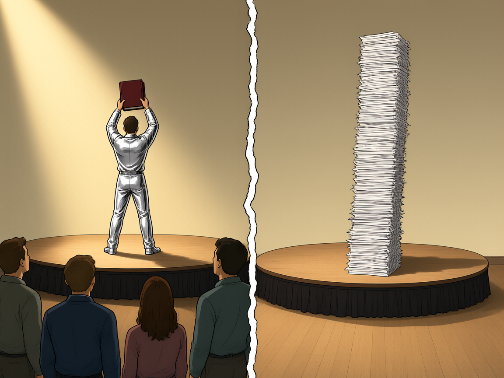

Todo jogo tem fases
Nenhum jogo se aprende jogando. Aprende-se antes: que a peça anda assim, que aquela linha não pode ser cruzada, que aquele botão serve para aquilo. Só depois de saber as regras a mão fica rápida.
A matemática é organizada assim, em fases. Cada fase ensina um conjunto de regras e cobra que elas sejam usadas juntas, na mesma conta. A fase 1 é curta: uma equação, uma reta, um sistema, uma matriz. Parece pouco, e é de propósito: é o conjunto mínimo com que todo o resto vai ser escrito.
As fases seguintes trazem mais regras ao mesmo tempo. Exigem mais horas. E não aceitam que se pule a anterior: quem não sabe resolver um sistema não vai saber inverter uma matriz, e descobre isso no meio de uma conta, sem saber de onde veio o erro.
Daí a pergunta que este capítulo persegue. Quais são as regras da fase 1: isso tem resposta nas seções seguintes, e qualquer livro responde. A outra pergunta é mais difícil: aprendidas as regras, como se aprende a jogar cada vez melhor? A resposta não é óbvia. Das dez técnicas de estudo mais comuns, duas têm apoio forte e consistente na literatura — testar-se e espaçar a prática no tempo (Dunlosky et al., 2013). As outras oito não têm.
Um rapaz tinha uma resposta. Ele tinha uma teoria sobre como passar de um trecho difícil: virar a noite. Não era ideia que ele defendesse numa conversa — era o que ele fazia. Chegava em casa, comia de pé, sentava diante do monitor e continuava até o corpo desistir antes dele. Numa dessas noites, às quatro da manhã, ele venceu. A tela mudou, ele ergueu os dois braços sozinho no quarto e concluiu que a teoria funcionava. Antes de dormir, abriu o caderno e fez um traço na página em branco. Um traço por vitória: era assim que ele contava.
Ele não é o assunto do capítulo. É o primeiro caso do capítulo. A vitória dele vai ser reexaminada cinco vezes ao longo do texto, e cada reexame cai onde a matemática daquela altura estiver ensinando a olhar. Comparar duas coisas é o que se faz com duas retas. Isolar uma mudança é o que a eliminação faz quando age numa linha só. Manter o resto parado é o que permite dizer o que mudou. A matemática da fase 1 é o conteúdo do jogo, e também o instrumento com que se descobre se alguém está jogando melhor de verdade, ou apenas ganhando.
A primeira regra é a mais simples de todas. Uma equação linear é uma condição sobre números, e condição não se cumpre pela metade.


1.1Equação linear
A equação \(2x + y - z = 7\) tem três incógnitas e, diante delas, quatro números: \(2\), \(1\), \(-1\) e \(7\). As letras dizem quais são as incógnitas; os números dizem o resto. Duas equações com a mesma lista de coeficientes, na mesma ordem, e o mesmo termo independente são a mesma equação — ainda que as incógnitas se chamem \(u, v, w\) em vez de \(x, y, z\). É essa separação entre o nome da incógnita e o número que a acompanha que permite, mais adiante, escrever só os números.
Uma equação linear nas incógnitas \(x_1, x_2, \dots, x_n\) é toda equação que pode ser escrita na forma
\[ a_1x_1 + a_2x_2 + \dots + a_nx_n = b, \]com \(a_1, \dots, a_n\) e \(b\) constantes reais. Os números \(a_1, \dots, a_n\) são os coeficientes e \(b\) é o termo independente. Dizer que a equação é linear é o mesmo que dizer que cada incógnita aparece elevada a \(1\), sozinha, multiplicada apenas por uma constante — ou, com outras palavras, que a equação é de primeiro grau em cada incógnita.
Nada na definição obriga os coeficientes a serem diferentes de zero. A equação \(0x_1 + 0x_2 = 0\) está na forma, e é a equação que não impõe restrição alguma; já \(0x_1 + 0x_2 = 1\) também está na forma, e não tem solução nenhuma. As duas aparecem no fim de qualquer escalonamento, disfarçadas de linha \(0 = 0\) e de linha \(0 = c\). Se a definição exigisse coeficientes não nulos, essas linhas ficariam sem nome — e é por terem nome que se pode dizer, olhando só a forma da matriz, que o sistema já acabou (ver 1.12).
O índice em \(x_1, \dots, x_n\) não é enfeite: ele amarra cada coeficiente à sua incógnita. Trocar duas incógnitas de lugar no texto de uma equação é trocar duas colunas de coeficientes, e isso muda o significado, ainda que a quantidade de números seja a mesma. Por isso a forma padrão fixa uma ordem, e a mantém até o fim do cálculo. Uma solução também vem nessa ordem: a \(n\)-upla \((x_1, x_2, \dots, x_n)\), não o conjunto de valores soltos.
O teste da forma
O teste é a forma, não a aparência: pergunte se a equação pode ser escrita como \(a_1x_1 + \dots + a_nx_n = b\). Somar a mesma quantidade aos dois lados, multiplicar os dois lados por uma constante não nula e reduzir termos semelhantes são manobras permitidas, porque são reversíveis e não mudam o conjunto de soluções. Por esse teste, \(2(x + y) = 3x - 1\) é linear: desenvolvendo e passando tudo para a esquerda, fica \(-x + 2y = -1\). E \(x(x - 1) = x^2 + y\) também é: o \(x^2\) cancela dos dois lados e sobra \(x + y = 0\). Nenhuma das duas parece linear à primeira vista, e as duas são.
A recíproca vale igualmente: aparência de linear não garante nada. Elevar os dois lados ao quadrado, multiplicar por expressão que contém incógnita, tirar a raiz de um lado — cada uma dessas manobras pode acrescentar ou perder soluções, e nenhuma é reversível sem hipótese extra. Elevar ao quadrado, por exemplo, transforma \(x = 3\) em \(x^2 = 9\), que também aceita \(x = -3\): uma solução virou duas. O teste exige que a equação final tenha a forma da definição e o mesmo conjunto-solução da original. Quando uma das duas condições falha, a equação não é linear, por mais simples que pareça.
São lineares: \(2x + y - z = 7\); \(x_1 - 3x_2 = 0\); \(y = 4\) (o coeficiente de \(x\) é zero, e isso é permitido); \(0x + 0y = 0\).
Não são: \(xy = 1\), porque há produto de duas incógnitas; \(x^2 + y = 3\), porque há incógnita ao quadrado; \(\operatorname{sen} x = 0\), porque a incógnita aparece dentro de uma função que não é da forma \(ax\); e \(\frac{1}{x} + y = 2\), porque a incógnita está no denominador.
Nos quatro casos, nenhuma manipulação leva à forma da definição. Não é falta de paciência algébrica: é impossível, e cada um falha por um motivo diferente — produto, potência, função, denominador.
O caso de uma incógnita só serve de medida. \(3x = 9\) é linear e tem uma única solução; \(|x| = 1\) não é linear e tem duas. Duas soluções já denunciam que a equação saiu da forma \(ax = b\): nesta, coeficiente nulo dá nenhuma ou todas, e coeficiente não nulo dá exatamente uma.
Nem toda equação chega na forma padrão; algumas precisam ser arrumadas. Em \(3(y - 1) = 2x + 5\), desenvolvendo vem \(3y - 3 = 2x + 5\) e, com tudo de um lado, \(2x - 3y = -8\). Em \(5 - \frac{x}{2} = y\), multiplicando por \(2\) (constante não nula, logo permitido) vem \(10 - x = 2y\), ou \(x + 2y = 10\). As duas são lineares; o que mudou foi só a arrumação.
3(y − 1) = 2x + 5 5 − x/2 = y
3y − 3 = 2x + 5 10 − x = 2y
−2x + 3y = 8 −x − 2y = −10
2x − 3y = −8 x + 2y = 10
Vale a pena arrumar sempre na mesma ordem — \(x\) antes de \(y\), coeficientes à esquerda, constante à direita — porque é essa ordem que a matriz vai repetir. Equação arrumada de dois jeitos diferentes gera matrizes diferentes para o mesmo problema.
A tentação é limpar denominadores antes de testar. A equação \(\frac{x + y}{x} = 1\) parece virar \(x + y = x\), isto é, \(y = 0\) — linear. Não é. Multiplicar por \(x\) não é manobra permitida, porque \(x\) pode ser zero e a equação original não está definida ali. O conjunto-solução dela é \(\{(x, 0) : x \neq 0\}\), que não é reta nenhuma: é uma reta com um ponto arrancado.
A regra que sobra: mover parcelas e reduzir termos, sim; multiplicar por expressão que contém incógnita, não. Denominador com incógnita é sinal de que a equação não é linear, e tratá-la como se fosse acrescenta soluções que o problema não tem. O mesmo raciocínio vale para raiz de incógnita: \(\sqrt{x} = y\) não é linear, e elevá-la ao quadrado dá \(x = y^2\), que também não é — e que muda o conjunto-solução, porque a primeira exige \(y \geq 0\) e a segunda não exige nada disso.
Observação. Quando o termo independente é zero, a equação chama-se homogênea, e a \(n\)-upla de zeros sempre a satisfaz: todos os produtos dão zero. Nada disso vale para \(b \neq 0\), em que a \(n\)-upla de zeros nunca é solução. A distinção parece pequena aqui e decide sistemas inteiros mais adiante.
Também vale fixar o vocabulário de uma vez: incógnita é a letra, coeficiente é o número que a multiplica, termo independente é o número que fica sozinho. Três palavras para três objetos distintos — e a frase "o coeficiente de \(y\) é zero" só faz sentido porque eles são distintos.
O nome não é metáfora. Em duas incógnitas, o conjunto de pares que satisfaz a equação é uma reta — e é assim que a Geometria Analítica o desenha há séculos. Em três, o objeto correspondente é um plano; acima disso não há figura com nome. A equação, porém, é sempre a mesma forma: uma soma de múltiplos das incógnitas igualada a uma constante. O que muda de uma dimensão para outra não é a equação, é o desenho — e é no desenho que a Geometria Analítica se apoiou. Convém começar pelo único caso em que ainda se pode apontar para a figura, que é o da reta: 1.2.
1.2A reta da geometria analítica
Antes de tratar de sistemas com \(n\) incógnitas, vale voltar ao único caso que se vê. Na Geometria Analítica, a equação \(ax + by = c\), com \(a\) e \(b\) não ambos nulos, é uma reta do plano. O par \((a, b)\) dá a direção perpendicular à reta — é o vetor normal —, e o número \(c\) escolhe, entre todas as retas paralelas de mesma normal, qual delas é esta. Os dois papéis são independentes: mudar \((a, b)\) gira a reta, mudar \(c\) a desloca sem girar.
O conjunto-solução da equação \(ax + by = c\), com \((a, b) \neq (0, 0)\), é
\[ S = \{(x, y) \in \mathbb{R}^2 : ax + by = c\}, \]e esse conjunto é uma reta do plano, com infinitos pontos. A razão é direta: se \(a \neq 0\), para cada valor escolhido de \(y\) sai um valor de \(x\), a saber \(x = (c - by)/a\); se \(a = 0\), então \(b \neq 0\) e o papel das duas se inverte.
Uma equação, então, nunca marca um ponto. Ela elimina uma direção de escolha e deixa a outra livre — e é essa liberdade que produz os infinitos pontos da reta. Isso precisa estar claro antes do próximo passo, porque o ponto único, quando aparece, não vem de uma equação: vem do encontro de duas.
Os casos extremos ajudam a fixar a leitura de \((a, b)\). Quando \(b = 0\), a equação vira \(ax = c\), ou \(x = c/a\): é a reta vertical, em que \(x\) está determinado e \(y\) é livre. Quando \(a = 0\), vira \(by = c\), ou \(y = c/b\): reta horizontal, com \(x\) livre. A regra da normal continua valendo nos dois — em \(x = 3\) a normal é \((1, 0)\), apontando para a direita, e a reta é vertical, como tem de ser. Nenhum dos dois casos é exceção; são só retas com uma direção particular.
Resolver é perguntar pela interseção
Um sistema de duas equações nas incógnitas \(x\) e \(y\) é um par de retas. A solução do sistema é o par que satisfaz as duas ao mesmo tempo, isto é, o ponto que está nas duas — a interseção. Resolver o sistema e achar a interseção das duas retas são a mesma tarefa, dita em duas linguagens.
Duas retas do plano só podem se encontrar de três maneiras, e não há uma quarta: cruzarem-se num ponto, serem a mesma reta, ou serem paralelas e distintas. A lista é completa porque cada reta tem uma direção só, e duas direções ou coincidem ou são diferentes — não há terceira possibilidade de inclinação. Traduzindo para conjuntos: a interseção é um ponto, é a reta inteira, ou é vazia. É a primeira aparição de uma contagem que vai valer para todo o capítulo — zero, uma ou infinitas soluções.
Os três casos, com os números que vão ao quadro. Cada linha é um sistema: no primeiro, as duas retas se cruzam; no segundo e no terceiro, as duas equações têm a mesma normal e diferem apenas na constante.
cruzam : 2x + y = 7 e x − y = 2 → (3; 1) coincidem : x + y = 3 e 2x + 2y = 6 → a reta inteira paralelas : x + y = 3 e 2x + 2y = 7 → vazio
No primeiro caso, \((3; 1)\) satisfaz as duas equações: \(2 \cdot 3 + 1 = 7\) e \(3 - 1 = 2\). No segundo, a segunda equação é a primeira multiplicada por \(2\), de modo que todo par que satisfaz uma satisfaz a outra: não há duas retas, há uma escrita duas vezes. No terceiro, dividir \(2x + 2y = 7\) por \(2\) dá \(x + y = 3{,}5\), que pede soma \(3{,}5\) onde a outra pede \(3\) — nenhum par faz as duas coisas.
O que decide entre os três casos é a comparação das duas linhas de coeficientes. Se \((a_2, b_2)\) não é múltiplo de \((a_1, b_1)\), as retas têm direções diferentes e se cruzam num ponto só. Se é múltiplo — digamos \((a_2, b_2) = k(a_1, b_1)\) —, as retas são paralelas; aí a constante decide: quando \(c_2 = k c_1\), é a mesma reta e há infinitas soluções; quando \(c_2 \neq k c_1\), são paralelas distintas e não há solução. Nos números acima, \(k = 2\) nos dois últimos casos, e \(6 = 2 \cdot 3\) contra \(7 \neq 2 \cdot 3\).
Observação. A condição "as normais não são múltiplas" pode ser escrita sem dividir nada: \(a_1b_2 - a_2b_1 \neq 0\). Essa quantidade é nula exatamente quando as duas linhas de coeficientes são proporcionais, e é ela que mais tarde recebe o nome de determinante. Por ora basta o critério: deu diferente de zero, um ponto; deu zero, ou nenhuma solução ou infinitas, e quem separa os dois é a constante.
Confira candidatos contra o primeiro sistema, \(2x + y = 7\) e \(x - y = 2\). Para \((3; 1)\): \(2 \cdot 3 + 1 = 7\) e \(3 - 1 = 2\), as duas certas. Para \((1; 3)\): \(2 \cdot 1 + 3 = 5\), errado já na primeira. Para \((0; 7)\): \(2 \cdot 0 + 7 = 7\), certa, mas \(0 - 7 = -7 \neq 2\). O par \((0; 7)\) está na primeira reta e fora da segunda.
Esse último caso é o que interessa: um par pode satisfazer uma equação e falhar na outra, e então não é solução de nada. Satisfazer uma equação é condição necessária, nunca suficiente. É por isso que o teste de um candidato se faz nas duas equações, sem escolher a mais fácil, e é por isso que ele não substitui o método: testar serve para conferir, não para descobrir.
O erro que se ouve em toda turma: "retas paralelas dão infinitas soluções". Não dão nenhuma. Paralelas distintas não têm ponto em comum, e o conjunto-solução do sistema é vazio — a resposta é que não existe par que sirva, e isso é uma resposta, não uma desistência.
Quem dá infinitas soluções é o outro caso: retas coincidentes, em que uma equação é múltipla da outra inclusive na constante. A confusão vem de as duas situações terem o mesmo desenho de "retas deitadas no mesmo sentido"; o que as separa é estarem uma sobre a outra ou lado a lado, e isso é a constante que diz.
O erro simétrico é tratar o caso coincidente como sistema sem resposta, porque "não deu um número". Deu: deu a reta inteira, e a resposta se escreve como família, um par para cada valor de \(y\). Trocar as duas leituras — vazio por infinito — é o mesmo erro de sinal, escrito em palavras.
Observação. Os três casos têm nome: sistema possível e determinado (uma solução), possível e indeterminado (infinitas) e impossível (nenhuma). "Possível" aqui significa apenas que o conjunto-solução não é vazio; não significa que a resposta é um número.
Vale notar também o que o desenho não decide: ele mostra o tipo de resposta, não os números. Olhando duas retas que se cruzam, sabe-se que há um ponto e não qual é. A conta é que dá o par \((3; 1)\); a figura só confirma que existe um.
Esse é o ponto em que a linguagem de conjuntos passa a valer mais que a figura: dizer "a interseção é vazia" funciona em qualquer dimensão, enquanto "as retas não se cruzam" só existe enquanto houver retas para olhar. E há uma diferença de papel entre as duas linguagens que convém registrar desde já: o desenho convence, a álgebra prova. Quem desenha duas retas quase paralelas não distingue "se cruzam muito longe" de "nunca se cruzam", e essa diferença é justamente a que separa um ponto único de conjunto vazio. Antes de abandonar o desenho, porém, é preciso fixar a notação do resultado — o conjunto-solução, com seus três tamanhos possíveis e com a distinção entre o elemento e o conjunto que o contém: 1.3.
Comparado com quê
A madrugada do rapaz é um ponto. Ele venceu o trecho difícil e anotou a vitória. O ponto existe, e é verdadeiro. Um ponto isolado, porém, não mostra de onde veio nem para onde vai. Falta o outro ponto, aquele que ninguém registrou.
Para saber se a noite teve peso, falta a noite que ele não virou: o mesmo trecho, a mesma hora de começar, o mesmo controle na mão, e o sono no lugar da vigília. Só a distância entre as duas noites responde. Sem a segunda, a primeira é apenas um relato — e relato não é medida, mesmo quando é honesto.
Duas retas lado a lado já ensinam isso. Uma reta sozinha já é uma resposta; o que ela não faz é dizer nada sobre outra reta. É o par que informa: o ponto em que as duas se encontram, o paralelismo sem encontro, a coincidência de todos os pontos. A resposta do sistema não está em nenhuma das duas retas; está na relação entre elas.
Um desenho experimental de 1998 nasce com essa exigência embutida. Baumeister e colegas colocaram pessoas numa sala com biscoitos recém-assados. Um grupo comeu biscoito. O outro foi obrigado a comer rabanete e a resistir ao que estava na mesa. Depois, os dois grupos tentaram a mesma tarefa difícil. O desenho mede a distância entre os dois, não o desempenho de cada um.
A exigência vale para qualquer afirmação sobre o que funciona: sem o segundo termo, o primeiro não é medida. É essa exigência que a seção seguinte aplica a um objeto maior: o conjunto-solução, a coleção de todos os pontos que satisfazem as equações ao mesmo tempo.

1.3O conjunto-solução
Resolvido o sistema \(2x + y = 7\), \(x - y = 2\), o resultado que se escreve no quadro é \(x = 3\), \(y = 1\). Está certo, e mesmo assim não é a resposta: a resposta é o conjunto cujo único elemento é o par \((3; 1)\). A diferença parece formalidade de professor, e não é. É ela que permite escrever "não há solução" sem que a frase soe como desculpa, e é ela que permite escrever "há infinitas" sem ter de listar uma por uma.
Uma solução de um sistema nas incógnitas \(x_1, \dots, x_n\) é uma \(n\)-upla \((x_1, \dots, x_n)\) que satisfaz todas as equações do sistema. O conjunto-solução \(S\) é o conjunto de todas as soluções — e ele é sempre um subconjunto de \(\mathbb{R}^n\).
\(\mathbb{R}^n\) é o conjunto das \(n\)-uplas ordenadas de números reais; \(\mathbb{R}^2\), o plano, é o caso \(n = 2\). Ordenadas quer dizer que a posição conta: \((3; 1)\) e \((1; 3)\) são pares diferentes, e só o primeiro é solução do sistema desta seção. Por isso a solução se escreve sempre na mesma ordem de incógnitas adotada no enunciado.
Com essa definição, os três resultados possíveis ganham uma escrita cada, e nenhuma delas é ambígua. Uma solução só: \(S = \{(3; 1)\}\), conjunto unitário. Infinitas: \(S\) é a reta, escrita \(S = \{(x, y) \in \mathbb{R}^2 : x + y = 3\}\). Nenhuma: \(S = \varnothing\), o conjunto vazio. A pertinência se lê com o símbolo próprio: \((3; 1) \in S\) quando o par satisfaz; e, para o sistema acima, \((1; 3) \notin S\), porque \(2 \cdot 1 + 3 \neq 7\). Note o que a notação carrega: dizer \(S = \varnothing\) é uma afirmação sobre o sistema e sobre o problema, não sobre quem o resolveu — significa que nenhum par de números reais satisfaz as duas equações, e isso é um resultado tão completo quanto \(S = \{(3; 1)\}\). Do mesmo modo, \(S\) infinito não é "não consegui terminar": é uma resposta com forma própria, a de uma família de pares.
A interseção, agora em conjuntos
Cada equação do sistema tem o seu próprio conjunto-solução: \(S_1\) para a primeira, \(S_2\) para a segunda, e assim por diante. A solução do sistema é o que pertence a todos eles ao mesmo tempo — ou seja, a interseção:
\[ S = S_1 \cap S_2 \cap \dots \cap S_m. \]Essa linha é a versão em conjuntos do que a seção anterior fazia com o desenho. Lá, duas retas que se cruzam num ponto; aqui, dois conjuntos cuja interseção tem um elemento. A vantagem é que a segunda versão não depende de haver figura: ela vale para \(m\) equações em \(n\) incógnitas, e continua valendo quando \(m\) e \(n\) são grandes. Ela também cobre o caso extremo \(m = 1\): um sistema com uma única equação tem por conjunto-solução o conjunto daquela equação, sem interseção nenhuma a fazer — e é por isso que \(x + 2y - z = 3\), sozinha, já tem infinitas soluções.
Para o sistema \(2x + y = 7\), \(x - y = 2\), os conjuntos de cada equação são
\[ S_1 = \{(x, y) \in \mathbb{R}^2 : 2x + y = 7\}, \qquad S_2 = \{(x, y) \in \mathbb{R}^2 : x - y = 2\}, \]duas retas. A interseção é o conjunto unitário \(S_1 \cap S_2 = \{(3; 1)\}\). Já no sistema \(x + y = 3\), \(2x + 2y = 6\), as duas equações descrevem a mesma reta, e a interseção é ela inteira: \(S = \{(3 - y, y) : y \in \mathbb{R}\}\), com um par para cada \(y\) real.
Repare na segunda escrita: não se listam os pares, descreve-se a regra que os produz. É assim que se escreve um conjunto infinito — dando a forma dos elementos, não os elementos.
No sistema \(x + y = 3\), \(2x + 2y = 7\), o conjunto da primeira equação é \(S_1 = \{(x, y) : x + y = 3\}\) e o da segunda é \(S_2 = \{(x, y) : x + y = 3{,}5\}\), duas retas paralelas distintas. Nenhum par tem soma \(3\) e soma \(3{,}5\) ao mesmo tempo, de modo que \(S_1 \cap S_2 = \varnothing\).
Aqui a notação faz o trabalho que a frase não faria: em vez de "as retas não se cruzam", que descreve o desenho, escreve-se \(S = \varnothing\), que descreve o resultado. A segunda frase continua valendo quando não há desenho possível.
Contar soluções é medir o conjunto
Contar as soluções de um sistema é perguntar quantos elementos tem \(S\), isto é, qual é a cardinalidade desse conjunto. E há somente três respostas possíveis: nenhum elemento, um elemento, ou infinitos. Não existe "exatamente dois", e a razão não é empírica — não é que nunca se tenha visto um caso; é que ele não pode acontecer com equações lineares. A prova cabe em três linhas e está em 1.6.
S = ∅ nenhuma solução 0 elemento
S = {(3; 1)} uma solução 1 elemento
S = reta infinitas infinitos elementos
A terceira linha merece precisão: quando \(S\) é infinito, ele não é apenas "grande". No caso da reta há tantos pares em \(S\) quantos números reais — a mesma quantidade de elementos que tem o plano inteiro, distribuída ao longo de uma linha. Por isso "infinitas" nunca significa "muitas, mas contáveis": significa que a família tem um parâmetro livre, e o parâmetro percorre \(\mathbb{R}\). Quem escreve "infinitas soluções" e pensa numa lista longa ainda não entendeu o objeto.
O erro de escrita mais comum é confundir o elemento com o conjunto: escrever \(S = (3; 1)\). Parece detalhe, e não é — \((3; 1)\) é um par ordenado, \(S\) é um conjunto de pares, e um conjunto não é igual a um de seus elementos. A escrita correta é \(S = \{(3; 1)\}\), e a diferença aparece na hora de perguntar "quantos elementos tem \(S\)?": a resposta é \(1\), e não "dois números".
O segundo erro é tomar \(\varnothing\) por "solução zero". Não é. No sistema homogêneo \(x + y = 0\), \(x - y = 0\), a solução é \((0; 0)\), e o conjunto-solução é \(\{(0; 0)\}\) — um conjunto com um elemento, que por acaso é o par de zeros. Vazio é vazio: \(\varnothing\) não tem elemento nenhum, e \(\{(0; 0)\}\) tem um.
Observação. A escolha de qual variável aparece na descrição do conjunto é livre, e muda apenas a aparência. A reta \(x + y = 3\) pode ser escrita \(\{(3 - y, y)\}\), ou \(\{(x, 3 - x)\}\), ou \(\{(3 - t, t)\}\): são o mesmo conjunto, com letras diferentes no papel de parâmetro. O que não é livre é o número de parâmetros — ele é sempre \(1\), aqui, porque a reta tem uma dimensão.
Esse número não se adivinha olhando a equação: ele é o número de incógnitas que sobram depois de a equação fixar as outras. Em uma equação com duas incógnitas, sobra uma; com três, sobram duas. Mais adiante, a forma da matriz dá essa contagem sem contar no dedo, e o critério é o número de colunas sem pivô (ver 1.12).
Toda a contagem do capítulo depende, então, de uma pergunta que se faz ao conjunto depois de encontrado: quantos elementos ele tem. E é aí que o desenho começa a faltar, porque contar elementos de um conjunto em \(\mathbb{R}^2\) ainda se faz olhando, mas o curso não para em duas variáveis. Em três incógnitas, \(S\) já é uma reta ou um plano do espaço, e "olhar" passa a ser um ato de fé; em quatro, não há nem isso: 1.4.
1.4Por que desenhar não escala
Com duas variáveis, o desenho resolve. Uma reta por equação, duas retas na mesma folha, e o ponto onde elas se cruzam está ali, à vista. Com três variáveis, cada equação linear descreve um plano no espaço, e a interseção de dois planos é, em geral, uma reta; a de três planos é, em geral, um ponto. Já não é fácil de enxergar: o plano do papel obriga a projetar, e a projeção comprime justamente a direção que decidiria a resposta. Com quatro variáveis não existe desenho nenhum — e o curso trabalha com quatro, com cinco, com \(n\).
O problema não é falta de habilidade com o lápis. É que o desenho tem uma dimensão de folha e o problema tem \(n\). Desenhar \(\mathbb{R}^3\) já é desenhar uma sombra de \(\mathbb{R}^3\); a sombra não guarda a informação de profundidade, e é essa informação que separa "os planos se encontram num ponto" de "os planos se encontram numa reta inteira" e de "não se encontram". Quem decide a resposta olhando a figura está lendo uma sombra e chamando aquilo de objeto. E a sombra não é só pobre: ela é seletiva, porque o olho completa o que a projeção deformou. E não há saída tecnológica: a tela também é plana, e um desenho tridimensional numa tela é a mesma projeção com mais recursos de cor.
Em \(\mathbb{R}^3\), a equação \(ax + by + cz = d\), com \((a, b, c) \neq (0, 0, 0)\), descreve um plano. A trinca \((a, b, c)\) é a direção perpendicular ao plano — a normal — e \(d\) escolhe, entre os planos paralelos de mesma normal, qual é este. A estrutura é a mesma da reta em \(\mathbb{R}^2\): uma direção normal e uma constante que desloca.
A diferença é o que se perde de vista. A reta é um objeto de uma dimensão dentro de duas; o plano é um objeto de duas dimensões dentro de três. Desenhar o primeiro exige um plano de papel; desenhar o segundo já exige representar dois objetos de dimensões diferentes no mesmo plano de papel, e é aí que a figura começa a mentir.
O que cada dimensão pede, em termos do que se pode desenhar:
2 incógnitas reta no plano desenha-se 3 incógnitas plano no espaço desenha-se mal 4 incógnitas — não há onde desenhar n incógnitas — não há onde desenhar
Repare que a terceira linha já não é uma questão de esforço: em \(\mathbb{R}^4\) o conjunto-solução de uma equação é um objeto de três dimensões dentro de um espaço de quatro, e não existe superfície de papel — nem tela — em que isso caiba sem perder o que interessa.
O caso em que a figura engana sem má-fé. Compare dois sistemas: \(x + y = 3\) com \(x + y = 3\), e \(x + y = 3\) com \(x + y = 3{,}001\). No papel, com qualquer espessura de traço, as retas de um e de outro são a mesma linha. As respostas, porém, são opostas: o primeiro tem infinitas soluções, porque é a mesma equação escrita duas vezes; o segundo não tem nenhuma, porque \(3 \neq 3{,}001\).
A diferença não é pequena, é total — e está inteira numa casa decimal que a figura não distingue. O mesmo vale em \(\mathbb{R}^3\): três planos que se cruzam num ponto e três planos que se cruzam numa reta comum desenham-se igual, e respondem "uma solução" e "infinitas". O que separa os casos é sempre um número, nunca uma inclinação percebida a olho.
Isso não significa jogar a geometria fora. Ela continua valendo, e continua sendo o melhor lugar para conferir: em \(\mathbb{R}^2\), depois de resolver o sistema por conta, desenhar as duas retas e verificar que o par obtido está sobre as duas é uma checagem rápida e severa — se o ponto não estiver na figura, a conta está errada, e não há como discutir. A conferência funciona porque o desenho é independente da álgebra: dois caminhos diferentes para o mesmo resultado. Vale a pena manter esse hábito enquanto ele é barato, e ele é barato só enquanto o sistema tem duas incógnitas.
O que a geometria deixa de ser é método. Método é o que se aplica sempre, inclusive quando não há figura; e a figura só existe em duas dimensões. A partir daqui, o caminho é algébrico: guardar apenas os coeficientes, na forma de uma matriz, e aplicar sobre eles operações que não mudam o conjunto-solução. Como essas operações são reversíveis, o conjunto do começo e o do fim são o mesmo — e o do fim, por estar numa forma organizada, deixa ler a resposta (ver 1.8). Repare no que esse argumento tem de diferente do desenho: ele não depende de o problema caber em lugar nenhum. Depende apenas de que as operações possam ser desfeitas, e desfazer uma conta é sempre possível, em qualquer dimensão.
As três respostas, em \(\mathbb{R}^3\), descritas pela posição dos planos:
um ponto comum três planos que se cortam num ponto uma solução uma reta comum três planos em torno da mesma reta infinitas nenhum ponto dois planos paralelos e distintos nenhuma
A lista é a mesma da seção anterior, com planos no lugar de retas — e vai continuar sendo a mesma em qualquer dimensão. O que muda de uma dimensão para outra é o nome do objeto que se cruza; o que não muda é a contagem: nenhuma, uma, ou infinitas.
É por isso que a matriz existe, e é bom dizê-lo sem rodeio: ela não é uma notação mais compacta para economizar giz. A matriz é o desenho que sobrevive quando não dá mais para desenhar — mesma informação de antes, sem a exigência de caber numa folha. As colunas guardam as incógnitas, as linhas guardam as equações, e a ordem das duas coisas continua dizendo o que dizia no desenho (ver 1.7).
A armadilha é confiar no desenho justamente onde ele é mais convincente. Duas retas quase paralelas: no papel elas parecem se cruzar num ponto, ou parecem não se cruzar nunca, e a diferença entre as duas leituras é a diferença entre um sistema com solução única e um sistema impossível. Três planos desenhados em perspectiva podem parecer convergir para um ponto quando não têm ponto comum algum.
A regra prática que sai disso: o desenho pode confirmar, nunca decidir. Quando a figura e a conta discordam, a conta está errada ou a figura está mal feita — e as duas hipóteses precisam ser checadas, porque o desenho não tem autoridade para encerrar a questão.
Observação. Há um custo real em abandonar a figura, e ele é honesto: perde-se a intuição imediata de "quantas soluções". Em compensação, ganha-se um critério que não depende de escala — e é o critério que vale em \(\mathbb{R}^{10}\). O que a álgebra faz é substituir a pergunta "quantos pontos se veem" pela pergunta "quantas colunas ficaram sem pivô", que se responde contando (ver 1.12).
Não se trata de um caso exótico reservado a quem faz pós-graduação. Um problema com quatro incógnitas aparece em qualquer balanço de massa, de corrente ou de custo com quatro parcelas, e ninguém desenha nada para resolvê-lo: aplica-se a mesma sequência de operações que se aplicaria a duas, com quatro colunas em vez de duas.
Resta então a tarefa que o desenho fazia sozinho: dizer, sem figura, o que é um sistema e o que é a sua solução. Isso exige uma definição que não apele para interseção de retas nem para ponto onde as linhas se cruzam — só para equações, incógnitas e o pertencer a um conjunto. É o que permite, adiante, tratar do mesmo jeito um sistema de duas equações e um de sete, e é a razão de o capítulo trocar a figura pela definição: 1.5.
1.5Sistema e solução
Uma equação linear isolada tem um conjunto-solução, e o capítulo já sabe descrevê-lo: uma reta no plano, quando há duas incógnitas. O problema muda de natureza quando duas ou mais condições precisam valer ao mesmo tempo. Não há mais um conjunto a escolher: há um conjunto novo, formado pelo que as condições têm em comum.
Um sistema de equações lineares é uma lista finita de \(m\) equações lineares nas mesmas incógnitas \(x_1, x_2, \dots, x_n\). Cada equação tem a forma \(a_{i1}x_1 + a_{i2}x_2 + \cdots + a_{in}x_n = b_i\), para \(i = 1, \dots, m\). Os números \(a_{ij}\) são os coeficientes; os \(b_i\), os termos independentes. Com \(m\) equações e \(n\) incógnitas, o sistema é \(m \times n\).
A definição cobra um detalhe que passa despercebido: as incógnitas são as mesmas em todas as equações, e a ordem delas é fixa. É essa ordem que permite, mais adiante, guardar apenas os coeficientes numa matriz sem perder informação — a coluna passa a carregar o nome da incógnita (ver 1.7).
Uma solução do sistema é uma \(n\)-upla \((x_1, x_2, \dots, x_n)\) de números reais que satisfaz todas as \(m\) equações. O conjunto-solução do sistema é o conjunto dessas n-uplas. Se \(S_i\) é o conjunto-solução da \(i\)-ésima equação, então \(S = S_1 \cap S_2 \cap \cdots \cap S_m\).
Note o conectivo: todas, não alguma. Em linguagem de conjuntos, \(x \in S\) se, e somente se, \(x \in S_i\) para cada \(i = 1, \dots, m\). Basta uma equação não satisfeita para \(x\) sair de \(S\) — e sair não é estar quase dentro. A interseção da definição não é enfeite de notação: ela é a afirmação inteira.
Observação. Quando as coordenadas são números, elas se separam por ponto e vírgula — \((3; 1)\), e não \((3, 1)\) — para que a vírgula fique reservada aos decimais, como em \(3{,}5\). Com variáveis, como em \((x_1, x_2)\), a vírgula não cria ambiguidade e continua sendo o separador.
O sistema \(2 \times 2\) que abre os exemplos resolvidos do capítulo:
2x + y = 7 x - y = 2
O par \((3; 1)\) é solução? A pergunta só tem resposta com as duas equações conferidas:
(3; 1) 2·3 + 1 = 7 ok 3 - 1 = 2 ok (4; -1) 2·4 - 1 = 7 ok 4 - (-1) = 5 falha
O primeiro par pertence a \(S_1\) e a \(S_2\), logo pertence a \(S\). O segundo pertence apenas a \(S_1\): satisfaz a primeira equação e erra a segunda por \(3\). Não é uma solução pela metade — é um par que resolve outra pergunta.
No plano, o que cada equação satisfaz é uma reta, e o sistema pede o ponto em que duas retas se cruzam (1.2). A primeira equação descreve uma reta, a segunda descreve outra, e o conjunto-solução é o único ponto comum às duas: \((3; 1)\). É a mesma interseção de 1.3, agora com um resultado numérico.
O erro mais comum desta seção: resolver a primeira equação, achar um par e considerar o problema encerrado. Em \(2x + y = 7\), o par \((4; -1)\) é uma resposta correta — para essa equação. O que não se sabe, e é exatamente o que o sistema pergunta, é se ele também satisfaz \(x - y = 2\). Com \(m\) equações há \(m\) testes, e nenhum deles é dispensável.
Resolver um sistema, portanto, não é “achar \(x\) e \(y\)”. É determinar \(S\) por completo: dizer quais n-uplas pertencem e quais não. Em muitos casos \(S\) não tem um elemento só — pode não ter nenhum, e pode ter infinitos, e a resposta continua sendo uma resposta (1.6).
O número de equações não decide o número de soluções. Um sistema \(1 \times 2\), como \(x + y = 3\), tem infinitas; um \(2 \times 1\), como \(x = 1\) e \(x = 2\), não tem nenhuma. O que decide é a relação entre as equações, e essa relação ainda não foi medida.
A ordem das equações também não faz parte do sistema. \(S\) é a interseção dos \(S_i\), e a interseção não depende da ordem em que os conjuntos são listados: escrever as mesmas equações em outra ordem dá o mesmo \(S\). Essa liberdade será usada, adiante, para escolher por onde começar a redução (1.8).
Vale registrar o caso em que a contagem é fácil. Se todos os \(b_i\) são nulos, o sistema é homogêneo, e a n-upla \((0, 0, \dots, 0)\) sempre pertence a \(S\): zero em cada equação dá zero. Um sistema homogêneo, portanto, nunca é impossível — e é a única família para a qual isso se pode afirmar antes de qualquer conta.
Observação. Um sistema é possível (ou compatível) quando \(S \neq \varnothing\), e impossível quando \(S = \varnothing\). “Possível” não distingue uma solução de infinitas; essa distinção é o assunto da seção seguinte.
O mesmo teste, com três equações
Nada no critério depende de haver duas incógnitas ou duas equações. O sistema \(3 \times 3\) dos exemplos resolvidos tem três equações, e a n-upla \((1; 2; 3)\) precisa passar nas três:
x + y + z = 6 2x - y + z = 3 x + 2y - z = 2
(1; 2; 3) 1 + 2 + 3 = 6 ok
2 - 2 + 3 = 3 ok
1 + 4 - 3 = 2 ok
(3; 2; 1) 3 + 2 + 1 = 6 ok
6 - 2 + 1 = 5 falha: deveria dar 3
3 + 4 - 1 = 6 falha: deveria dar 2
O primeiro terno passa nas três e pertence a \(S\). O segundo satisfaz a primeira equação — e só a primeira. É o mesmo erro de antes, agora com uma equação a mais para conferir. O que decide a pertinência é a pior das conferências, nunca a melhor.
A verificação, aliás, é o único teste barato que existe para uma n-upla dada: substituir e comparar. Ela não resolve o sistema, mas encerra qualquer dúvida sobre uma resposta já obtida, e por isso é o último passo de todo exemplo resolvido do capítulo.
Nada muda com quatro, cinco ou \(n\) incógnitas: a n-upla cresce, o número de conferências cresce, e o critério continua o mesmo — todas as equações, sem exceção. O que cresce rápido é o custo de resolver por substituição, e é por isso que o método do capítulo troca a substituição pela redução sistemática.
Com o critério na mão, fica a pergunta de contagem: quantas n-uplas \(S\) pode ter? A resposta é curta e inclui uma proibição — três casos possíveis, e um deles nunca acontece. É o que a próxima seção demonstra em três linhas (1.6).
1.6As três respostas
A seção anterior definiu \(S\) e deu o teste para decidir se uma n-upla dada pertence a ele. Fica a pergunta de contagem: quantos elementos \(S\) pode ter? A resposta é mais curta do que a intuição sugere — e uma das possibilidades que a intuição admite está proibida.
Quanto ao conjunto-solução \(S\), um sistema é
- impossível, se \(S = \varnothing\): nenhuma n-upla satisfaz as equações;
- possível e determinado, se \(S = \{p\}\) para algum \(p\): uma única solução;
- possível e indeterminado, se \(S\) é infinito: infinitas soluções.
“Possível” reúne os dois últimos casos e significa apenas \(S \neq \varnothing\).
A lista é completa por um motivo banal: um conjunto é vazio, tem um elemento, ou tem pelo menos dois. O que não é banal é o passo seguinte — se tem pelo menos dois, então tem infinitos. É aí que a lista se fecha, e é aí que “exatamente duas soluções” deixa de existir.
Por que “exatamente duas” não acontece
Sejam \(u\) e \(v\) duas soluções distintas do mesmo sistema. Considere a n-upla
\[ w_t = u + t(v - u) = (1 - t)u + t v, \qquad t \in \mathbb{R}. \]Para \(t = 0\) ela é \(u\); para \(t = 1\), é \(v\); para \(t = \tfrac{1}{2}\), é o ponto médio entre as duas. A afirmação é que todas elas são soluções.
A verificação é uma linha por equação. Tome a \(i\)-ésima, \(a_{i1}x_1 + \cdots + a_{in}x_n = b_i\). Como \(u\) e \(v\) são soluções, o lado esquerdo vale \(b_i\) em cada uma delas. Em \(w_t\) ele vale
\[ (1 - t)\,b_i + t\,b_i = b_i, \]porque o lado esquerdo de cada equação é linear nas incógnitas: o valor dele em \(w_t\) é a mesma combinação dos valores em \(u\) e em \(v\), isto é, \((1 - t)b_i + t b_i\). Nada foi suposto sobre \(i\): vale para todas as equações ao mesmo tempo, logo \(w_t \in S\).
Sobrou mostrar que \(t\) distintos dão n-uplas distintas. Se \(w_t = w_s\), então \((t - s)(v - u) = 0\). Como \(v - u \neq 0\), por serem soluções distintas, resta \(t = s\). Cada \(t\) real dá um ponto diferente, e há tantos \(t\) quantos números reais.
Em três linhas: (i) se \(u\) e \(v\) estão em \(S\), então \(u + t(v - u)\) está em \(S\) para todo \(t\) real; (ii) \(t\) distintos dão pontos distintos; (iii) logo \(S\) contém uma reta inteira. Não existe sistema com exatamente duas soluções: a segunda, quando aparece, chega acompanhada de uma reta, e o argumento não deixa espaço para um caso intermediário.
Observação. Onde a linearidade entrou? No passo em que a combinação \(w_t\) foi substituída e o lado esquerdo deu \((1 - t)b_i + t b_i\). Numa equação não linear isso falha: \(x^2 = 1\) tem exatamente duas soluções, \(1\) e \(-1\), e a média delas, \(0\), não é solução. A proibição do “exatamente dois” é um teorema sobre equações lineares, não sobre equações em geral.
A consequência prática é assimétrica. Provar que \(S\) é unitário exige trabalho: é preciso exibir a solução e mostrar que não há outra. Provar que \(S\) é infinito exige apenas duas soluções distintas — quem encontra duas já encontrou infinitas.
Em \(\mathbb{R}^2\), os três casos têm nome geométrico, herdado do cruzamento de duas retas (1.3):
| \(S\) | Sistema | Duas retas no plano |
|---|---|---|
| \(\varnothing\) | impossível | paralelas distintas, sem ponto comum |
| um ponto | possível e determinado | concorrentes, um único cruzamento |
| infinitos | possível e indeterminado | coincidentes, a mesma reta |
Os dois casos que não dão um número
Primeiro, o sistema \(x + y = 3\), \(2x + 2y = 7\). Da primeira equação vem \(y = 3 - x\). Substituindo na segunda:
\[ 2x + 2(3 - x) = 6 \neq 7. \]O lado esquerdo não depende de \(x\): vale \(6\) para qualquer escolha. A segunda equação pede \(7\). Não há \(x\) que resolva, e não é falta de método — é impossibilidade. O sistema é impossível, \(S = \varnothing\).
Geometricamente: dividindo a segunda equação por \(2\), ela vira \(x + y = 3{,}5\). As duas retas têm a mesma inclinação e alturas diferentes, logo são paralelas e não se cruzam. A álgebra disse isso em uma linha, sem desenho nenhum.
Quando a substituição termina numa igualdade falsa, como \(6 = 7\), a conclusão é \(S = \varnothing\) e o problema acaba ali. O que não se faz é continuar procurando o valor que “faltou”: uma igualdade falsa entre números não tem solução, e insistir nela só produz erro de sinal.
Agora o segundo, com um número trocado: \(x + y = 3\) e \(2x + 2y = 6\). A mesma substituição dá
\[ 2x + 2(3 - x) = 6, \]que é verdadeira para todo \(x\). A segunda equação não acrescenta informação: ela é a primeira multiplicada por \(2\). Resta uma condição só, e uma condição em duas incógnitas não fixa um ponto — fixa uma reta.
Para descrever \(S\), escolhe-se uma incógnita como parâmetro. Com \(y = t\), sai \(x = 3 - t\), e
\[ S = \{(3 - t;\, t) : t \in \mathbb{R}\}. \]Três valores conferem a leitura: \(t = 0\) dá \((3; 0)\); \(t = 1\), \((2; 1)\); \(t = 2\), \((1; 2)\). Os três satisfazem as duas equações, e todos os pontos de \(S\) aparecem assim, porque \(t\) é justamente o valor de \(y\) em cada um.
Como escrever a resposta
A resposta de um sistema indeterminado é o conjunto parametrizado, não uma equação solta. Escrever \(x = 3 - y\) é verdadeiro e insuficiente: falta dizer que \(y\) percorre os reais e falta dizer que o par é \((3 - t;\, t)\). A forma completa é a do conjunto acima.
O parâmetro também não é único. Com \(x = s\), sai \(y = 3 - s\) e \(S = \{(s;\, 3 - s) : s \in \mathbb{R}\}\) — o mesmo conjunto, descrito a partir da outra incógnita. Duas parametrizações diferentes de \(S\) não são erro; são duas escolhas de variável livre.
“Infinitas soluções” não significa que qualquer par serve. Em \(x + y = 3\), o par \((2; 1)\) é solução e \((7; 7)\) não é. O conjunto é infinito, mas é uma reta — um subconjunto muito fino do plano. Infinito não é sinônimo de tudo.
Fica então o problema operacional: dado um sistema, decidir qual dos três casos ocorre e, no caso indeterminado, escrever o conjunto. Substituir funciona em \(2 \times 2\) e trava em \(4 \times 4\), onde isolar uma incógnita suja as outras três. O caminho que escala é reduzir o sistema a uma forma mais simples, e o primeiro passo é parar de reescrever as incógnitas: guardar só os coeficientes, na matriz aumentada (1.7).
Mudou mais de uma coisa
Virar a noite é uma coisa na descrição e duas na conta: mais horas de prática e menos horas de sono. Ele fez as duas de uma vez, e anotou o resultado como se uma só tivesse mudado. O caderno ficou com a versão simples.
O trecho saiu melhor, e ele creditou o resultado à teoria. Mas o efeito podia vir das horas a mais, do sono a menos, ou dos dois somados. Sono perdido prejudica a atenção e o desempenho acadêmico (Curcio, Ferrara & De Gennaro, 2006). O sono também participa da consolidação da memória (Rasch & Born, 2013). Com duas mudanças ao mesmo tempo, não há como separar o que cada uma fez. Uma pode ter anulado parte da outra.
A sensação de que aprendeu não resolve o problema. Estudantes julgam mal o que aprenderam (Dunlosky & Thiede, 2013): o que se sente ao estudar não é medida do que ficou. O caderno registrava a vitória, não a causa.
Isolar é o oposto disso, e é o que a eliminação faz. Age-se numa linha só, e as outras ficam intactas. Assim o efeito tem de onde vir.
O que permite separar as mudanças é o registro do que se fez. Sem ele, o resultado é só um número melhor, e número melhor não diz de onde veio. Com ele, cada alteração tem endereço. Tudo o que precisa ser registrado cabe numa tabela: os coeficientes em fila e, ao lado, a coluna dos termos independentes — a matriz aumentada.
1.7Matriz aumentada
Ao resolver um sistema à mão, os nomes das incógnitas são escritos uma vez por equação e depois repetidos em cada linha. Se a eliminação nunca troca o nome de uma incógnita, repetir \(x\), \(y\), \(z\) nove vezes num sistema \(3 \times 3\) é trabalho que não informa nada — e é justamente onde o copista se perde: um sinal trocado na terceira linha, um \(y\) que virou \(z\) na segunda, e a conta segue com dois erros que se cancelam ou com um que não se cancela.
O que carrega o nome é a coluna. Fixada a ordem das incógnitas — digamos \(x\), \(y\), \(z\) —, a primeira coluna é sempre o coeficiente de \(x\), a segunda o de \(y\), a terceira o de \(z\). A posição basta como rótulo: nenhum número precisa andar acompanhado da letra para que se saiba a que incógnita pertence. Escrever só os coeficientes não é economia de tinta; é reconhecer que a informação "de quem é este coeficiente" já está na posição.
Dado um sistema linear de \(m\) equações e \(n\) incógnitas, a matriz aumentada do sistema é a tabela de \(m\) linhas e \(n+1\) colunas em que a linha \(i\) traz, na ordem fixada das incógnitas, os coeficientes da equação \(i\), e a última coluna traz o termo independente dessa mesma equação. As \(n\) primeiras colunas formam a matriz dos coeficientes; a última é a coluna dos termos independentes. Uma barra vertical separa as duas partes.
Chamar isso de representação, e não de resumo, é o ponto. Um resumo perde informação; aqui não se perde nada. Com a ordem das incógnitas declarada, a passagem do sistema para a matriz é reversível: cada linha da matriz volta a ser exatamente uma equação, com cada coeficiente no lugar em que estava. A correspondência vai nos dois sentidos e é um-a-um — um sistema, com a ordem das incógnitas declarada, determina uma única matriz aumentada, e uma matriz aumentada vem de um único sistema. Só duas coisas precisam estar claras para que não haja ambiguidade: a ordem das colunas e o lado da barra em que está cada número.
O sistema do exemplo B1, com a matriz aumentada ao lado. Ordem das colunas: \(x\), \(y\), \(z\), e depois os termos independentes.
x + y + z = 6 [ 1 1 1 | 6 ] 2x - y + z = 3 [ 2 -1 1 | 3 ] x + 2y - z = 2 [ 1 2 -1 | 2 ]
A leitura de volta é literal: a segunda linha da matriz diz \(2x - y + z = 3\), e nada além disso; a terceira diz \(x + 2y - z = 2\). Se as duas leituras coincidem com o sistema escrito, a transcrição está certa; se uma delas não coincide, o erro está na transcrição, e não no sistema. Três linhas e quatro colunas: a matriz é \(3 \times 4\), e a dos coeficientes é \(3 \times 3\).
O mesmo com o B2, em que a primeira equação não tem \(x\). O coeficiente zero é escrito, e a coluna de \(x\) continua sendo a primeira das três.
y + z = 5 [ 0 1 1 | 5 ] x + y + z = 6 [ 1 1 1 | 6 ] x + 2y - z = 2 [ 1 2 -1 | 2 ]
Sem o zero, a primeira linha teria três números em vez de quatro e a matriz deixaria de ser \(3 \times 4\): a coluna de \(z\) escorregaria para a posição de \(y\), e o sistema representado passaria a ser outro, com outra solução.
Note o que a matriz não guarda: os sinais de soma e igualdade, os nomes das incógnitas, a ordem em que as equações aparecem. Nada disso é necessário. Os sinais são reconstruídos pela regra "coeficiente vezes incógnita, somando"; os nomes vêm da ordem das colunas; e a ordem das equações — isto é, das linhas — pode mudar livremente, porque trocar duas equações de lugar não troca o conjunto de pontos que satisfaz todas. Essa liberdade sobre as linhas, negada às colunas, é a base de todo o método.
Observação. A barra vertical não é sinal de igual nem operação alguma: é separador. Ela marca a posição em que o "\(=\)" estaria se a linha fosse escrita como equação. Serve para que o leitor não confunda coeficiente com termo independente — e só. Nenhum número atravessa a barra em conta nenhuma; o que se move é a linha inteira, dos dois lados dela.
Vale contar colunas como conferência. Uma matriz com \(m\) linhas e \(n+1\) colunas veio de um sistema de \(m\) equações e \(n\) incógnitas; um sistema de três incógnitas gera quatro colunas, nem mais nem menos. Se aparecer uma quinta, a transcrição está errada. O mesmo vale para o número de linhas: equações e linhas se correspondem uma a uma, e a contagem não muda ao passar de um lado para o outro.
A matriz dos coeficientes, sozinha, não é um sistema: sem a coluna dos termos independentes não há igualdade nenhuma a satisfazer. Dois sistemas diferentes podem ter a mesma matriz de coeficientes e diferir apenas no último termo de cada linha — e é exatamente o que a barra deixa visível. Ela impede que o número à direita do \(=\) seja somado como se fosse coeficiente de alguma incógnita, erro que a forma de equação não deixa acontecer e a forma de matriz deixa.
Observação. A ordem das colunas não está escrita em lugar nenhum da matriz. Por isso a primeira linha da folha de conta traz, em geral, a ordem adotada: "colunas: \(x\), \(y\), \(z\), termos independentes". É uma anotação de uma linha, e é a única informação de que um leitor de fora precisa para reconstruir o sistema a partir da matriz.
A ordem das colunas é parte da matriz, não uma escolha de apresentação. Trocar duas colunas — mesmo "só para ver melhor" — troca os nomes de duas incógnitas e produz um sistema diferente. A regra é simples: lê-se da esquerda para a direita, na ordem declarada no início, e essa ordem não se altera até o fim do problema.
A ordem das colunas não precisa ser alfabética; precisa ser fixa. Adotar \(z\), \(x\), \(y\) nessa sequência é legítimo, desde que a escolha seja declarada antes da primeira conta e mantida até o fim. O que a matriz não tolera é ordem variável no meio do caminho: se a segunda coluna é \(y\) nas duas primeiras linhas e \(z\) na terceira, a tabela deixou de representar um sistema linear e passou a representar nada.
Na escrita à mão, a matriz aumentada costuma ser denotada por \([A \mid b]\), com \(A\) nomeando a matriz dos coeficientes e \(b\) a coluna dos termos independentes. A notação será útil mais adiante, quando for preciso falar de \(A\) e de \(b\) separadamente; por enquanto, o que importa é que a barra é a fronteira entre aquilo que multiplica incógnitas e aquilo que sobra do outro lado da igualdade.
A consequência prática disso é de disciplina, não de álgebra. Escrita a matriz, não se volta à forma de equação no meio do processo. Quem reescreve as equações para "conferir" costuma reintroduzir na matriz o coeficiente que já havia sido zerado, e o trabalho anterior se perde: a conferência desfaz o que a conta fez. O registro fica todo em linhas, e cada operação é anotada ao lado da linha que ela altera, como detalha a seção 1.10.
Abreviar tem um preço, e vale dizer qual é. A matriz não mostra, por si, quantas incógnitas ficaram livres nem se o sistema é impossível: essas leituras dependem da forma que a matriz assume depois de trabalhada, não da matriz inicial. O que a abreviação garante é mais modesto e mais útil — que nada do sistema se perdeu no caminho, e que a conta pode ser feita só com números, sem que o significado de cada coluna saia do lugar.
Com o sistema reduzido a uma tabela de números, o problema muda de forma: já não se pergunta "que equações são estas", e sim "que movimentos nesta tabela preservam a solução". São três, e todas têm a mesma propriedade — podem ser desfeitas (ver 1.8).
1.8As três operações elementares
Escrito o sistema como matriz, o problema deixa de ser "resolver equações" e passa a ser "transformar linhas". Nem toda transformação serve: trocar um coeficiente por outro muda a solução, e o resultado não vale mais nada. As que servem são três, e o critério que as seleciona é um só — cada uma pode ser desfeita.
Sobre as linhas de uma matriz aumentada são permitidas três operações elementares:
- trocar duas linhas entre si: \(R_i \leftrightarrow R_j\);
- multiplicar uma linha por um escalar não nulo: \(R_i \leftarrow cR_i\), com \(c \neq 0\);
- somar a uma linha um múltiplo de outra: \(R_i \leftarrow R_i + cR_j\), com \(i \neq j\).
A garantia de que o conjunto-solução não muda não vem de "a matriz parece a mesma coisa reorganizada". Vem de um fato mais forte, e ele é o motivo de as três operações serem essas e não outras: se uma operação leva a matriz \(A\) na matriz \(B\), a mesma operação — ou a sua inversa — leva \(B\) de volta em \(A\). Cada uma das três é, nesse sentido, reversível, e a volta usa apenas operações da mesma lista.
Veja o inverso de cada uma. Trocar \(R_1\) com \(R_2\) se desfaz trocando \(R_1\) com \(R_2\) outra vez: a operação é a sua própria inversa. Multiplicar \(R_i\) por \(c \neq 0\) se desfaz multiplicando a mesma linha por \(1/c\) — e é exatamente aqui que a condição \(c \neq 0\) entra. Com \(c = 0\) a linha inteira vira zero e não há como recuperar o que havia nela; a operação não teria volta, e de fato ela muda o conjunto-solução sempre que a linha original não era a equação \(0 = 0\). Somar \(c\) vezes \(R_j\) a \(R_i\) se desfaz subtraindo \(c\) vezes \(R_j\) de \(R_i\); a linha \(R_j\), usada como fonte, não foi alterada e continua disponível para a volta.
Reversibilidade dá as duas inclusões de uma vez, e é isso que fecha o argumento. Tome a operação (iii): se uma lista de números \(x\) satisfaz as linhas \(R_i\) e \(R_j\), então satisfaz também \(R_i + cR_j\), porque cada lado da igualdade nova é a soma do lado antigo com \(c\) vezes o outro. Logo toda solução de \(A\) é solução de \(B\). Na direção contrária, se \(x\) satisfaz \(R_i + cR_j\) e satisfaz \(R_j\) — que não mudou —, subtrair \(c\) vezes a segunda igualdade da primeira devolve \(R_i\); logo toda solução de \(B\) é solução de \(A\). As duas inclusões juntas dizem que os conjuntos-solução coincidem, e não apenas que um está contido no outro. Para (i) e (ii) o argumento é o mesmo, com a volta de uma linha só.
Nem toda transformação de linhas serve, e um exemplo mostra o tamanho do estrago. No sistema B1, substituir \(R_2\) pela própria \(R_1\) — copiar a primeira linha sobre a segunda — produz uma matriz com duas linhas iguais. Duas linhas iguais são duas vezes a mesma condição, e a condição \(2x - y + z = 3\) desaparece. O conjunto-solução cresce: das três condições originais restam duas, que se cruzam numa reta, e não num ponto. A operação não tem volta, porque a linha sobrescrita não está em lugar nenhum da matriz resultante. Não por acaso, não existe operação elementar que substitua uma linha por outra.
A matriz aumentada do sistema B1, e a aplicação de \(R_2 \leftarrow R_2 - 2R_1\) — a operação (iii) com \(c = -2\).
[ 1 1 1 | 6 ] [ 2 -1 1 | 3 ] [ 1 2 -1 | 2 ]
- Escolhe-se o multiplicador para zerar a primeira entrada de \(R_2\): \(c = -2\), porque \(2 + (-2)\cdot 1 = 0\).
- A operação atinge a linha inteira, termo independente incluído: \(1 + (-2)\cdot 1 = -1\) e \(3 + (-2)\cdot 6 = -9\).
- A linha \(R_1\), fonte do múltiplo, não se altera; \(R_3\) também não, porque não foi citada.
[ 1 1 1 | 6 ] [ 0 -3 -1 | -9 ] [ 1 2 -1 | 2 ]
A solução continua sendo \((1; 2; 3)\). A conferência é direta na linha nova: \(0 \cdot 1 + (-3)\cdot 2 + (-1)\cdot 3 = -6 - 3 = -9\).
A volta, que é o que sustenta o argumento: somar \(2R_1\) à segunda linha devolve a linha original, entrada por entrada.
0 + 2(1) = 2 -3 + 2(1) = -1 -1 + 2(1) = 1 -9 + 2(6) = 3
O resultado é \([\,2 \;\; -1 \;\; 1 \mid 3\,]\), exatamente a linha de partida. Nada foi perdido, porque nada foi irreversível.
A operação (iii) é a que aparece em toda conta: zerar um coeficiente é sempre somar a uma linha um múltiplo de outra, nunca "substituir o número por zero". É também a que mais produz erro, e o erro é quase sempre de sinal — o multiplicador entra com o sinal trocado, ou entra só na primeira entrada da linha. Por isso a operação se escreve ao lado da linha, antes de ser executada, com o multiplicador explícito: \(R_2 \leftarrow R_2 - 2R_1\), e não "somei duas vezes a primeira".
Observação. Não existe uma quarta operação chamada "subtrair": subtrair \(2R_1\) é somar \((-2)R_1\). A escrita \(R_2 \leftarrow R_2 - 2R_1\) é abreviação de caderno, cômoda e correta, mas o número que multiplica a linha fonte é \(-2\) — e é \(-2\) que entra em todas as entradas da linha, inclusive na última. Quem escreve o sinal de menos e depois multiplica por \(2\) com sinal positivo comete o mesmo erro duas vezes, com aparências diferentes.
Três erros de sinal, todos frequentes. Primeiro: aplicar a operação a uma entrada só e esquecer o resto da linha — no exemplo acima, parar em \(0\) e deixar \(-1\) e \(1\) como estavam. Segundo: inverter a ordem, escrevendo \(R_2 \leftarrow 2R_1 - R_2\); isso é a operação (iii) seguida de uma troca de sinal, e sem a troca o resultado é o negativo da linha certa. Terceiro: esquecer que o termo independente também é uma entrada da linha, e calcular \(3 - 2 \cdot 6\) como \(3 - 2 = 1\) em vez de \(-9\).
Uma última restrição, que vale enunciar porque a tentação é grande: as operações são sobre linhas, nunca sobre colunas. Trocar duas colunas equivale a renomear duas incógnitas — o conjunto de triplas que resolve o sistema não é mais o mesmo, é o mesmo com duas coordenadas trocadas; e como o problema pede as incógnitas pelos nomes originais, isso é outra resposta. Somar uma coluna a outra é pior: mistura duas incógnitas numa única coluna, e nenhuma renomeação desfaz a mistura. A linha, ao contrário, é uma equação inteira, e substituir uma equação por uma combinação dela com outra é legítimo.
A reversibilidade tem uma consequência prática que aparece no meio da conta: se um número parece errado, é possível desfazer o último passo e refazê-lo, aplicando a operação inversa à mão. Sem a garantia de volta, esse recurso não existiria — uma conta suspeita obrigaria a recomeçar do sistema original, e o trabalho já feito não serviria para nada. É também por isso que registrar a operação ao lado da linha não é enfeite: sem saber qual operação foi feita, não se sabe qual desfazer.
Com as três operações disponíveis e a garantia de que nenhuma delas altera o conjunto-solução, falta apenas decidir em que ordem aplicá-las e quando parar. A forma de parada tem nome — forma escalonada — e é o assunto da seção 1.9.
Quem não mudou nada
Toda medida de mudança precisa de algo que não mudou. Sem essa referência, o resultado se confunde com a passagem do tempo, com o cansaço do dia e com o treino que já estava em curso. Quem não mudou nada serve de régua. Não é enfeite de método: é a condição para que a diferença observada tenha dono. Sem uma referência parada, todo resultado parece efeito.
O rapaz não tinha esse grupo. O caderno registrava as noites em que ele ganhou, e só elas; o que teria acontecido sem a mudança não estava escrito em lugar nenhum.
No experimento de 1998, o grupo que passou pela exigência — resistir ao biscoito — foi o que desistiu antes. O outro não passou por exigência nenhuma, e por isso serve de régua: sem ele, o desfecho do primeiro se confundiria com o dia.
Na conta, a régua é a linha que não se move. Somar a uma linha um múltiplo de outra mexe em quase tudo, menos na linha que fornece o múltiplo: ela permanece onde está, e é por isso que se pode dizer o que mudou. Cada operação tem um alvo, e o que não era alvo fica registrado como resto — a linha parada dá procedência ao resultado. É o mesmo papel que a régua cumpre no experimento.
Quando a conta termina, o desenho que sobra tem nome: a forma escalonada, com a escada de zeros à esquerda de cada linha, e o pivô, o primeiro número não nulo de cada linha.

1.9Forma escalonada e pivô
As três operações de 1.8 preservam o conjunto-solução, mas não dizem quando parar. Falta um alvo: uma forma que, atingida, deixe o sistema resolvido por substituição de baixo para cima. Essa forma é a escada.
A exigência é de posição, não de tamanho. Em cada linha interessa o primeiro número não nulo — ele é o ponto de apoio da linha. A linha de baixo só pode apoiar mais à direita. Com isso a última equação fica com uma incógnita, a penúltima com duas, e a volta é imediata.
O pivô de uma linha é o primeiro elemento não nulo dessa linha, contando da esquerda para a direita.
Uma matriz está na forma escalonada quando o pivô de cada linha está à direita do pivô da linha anterior, tudo o que está abaixo de um pivô é zero, e as linhas nulas — se existirem — ficam no fim.
Nada é exigido sobre o que está acima de um pivô, nem que o pivô valha 1. Uma escada com degraus de alturas diferentes continua sendo escada: o que a definição proíbe é o pivô descer e voltar para a esquerda. Duas colunas de zero entre um pivô e o seguinte não são erro.
Esta matriz está escalonada. Os pivôs são \(1\), \(2\) e \(5\), e cada um está à direita do anterior:
1 3 0 2 | 5 0 0 2 -1 | -4 0 0 0 5 | 6
Esta não está, e por um motivo só: o pivô da terceira linha é o \(2\) da segunda coluna, a mesma coluna do pivô da segunda linha. A escada desce sem andar para a direita — e descer no mesmo lugar não é descer:
1 3 0 | 5 0 4 2 | -4 0 2 1 | 1
Repare que a segunda matriz também tem um número não nulo abaixo de um pivô — o \(2\) da última linha está debaixo do \(4\). Uma coisa decorre da outra: se o pivô não desce para a direita, sobra número embaixo dele.
A coluna à direita da barra entra na escada como qualquer outra. Ela não é um caso especial, e também não é obrigatório que fique sem pivô: quando um pivô cai nela, o sistema não tem solução — é uma das quatro leituras de 1.12. Por isso a matriz aumentada se escala inteira, barra inclusive.
A forma reduzida não é o meio do caminho
Existe uma forma mais forte, a escalonada reduzida: além de tudo isso, cada pivô vale 1 e é o único número não nulo da sua coluna, de modo que há zero também acima dele. A matriz abaixo está reduzida, e a solução aparece nas últimas entradas:
1 0 0 | 1 0 1 0 | 2 0 0 1 | 3
Escalonar o sistema da ficha B1 até o fim, declarando a operação em cada passagem:
x + y + z = 6 2x - y + z = 3 x + 2y - z = 2
Na matriz aumentada, com a operação escrita à margem:
1 1 1 | 6 2 -1 1 | 3 R2 ← R2 - 2R1 1 2 -1 | 2 R3 ← R3 - R1 ------------------------------------- 1 1 1 | 6 0 -3 -1 | -9 0 1 -2 | -4 R2 ↔ R3 ------------------------------------- 1 1 1 | 6 0 1 -2 | -4 0 -3 -1 | -9 R3 ← R3 + 3R2 ------------------------------------- 1 1 1 | 6 0 1 -2 | -4 0 0 -7 | -21
- \(R_2 \leftarrow R_2 - 2R_1\). A conta, entrada por entrada: \(2 - 2 = 0\), \(-1 - 2 = -3\), \(1 - 2 = -1\), \(3 - 12 = -9\).
- \(R_3 \leftarrow R_3 - R_1\). Mesma coluna, terceira linha: \(1 - 1 = 0\), \(2 - 1 = 1\), \(-1 - 1 = -2\), \(2 - 6 = -4\).
- \(R_2 \leftrightarrow R_3\). A coluna do \(y\) ficou com um \(1\) na terceira linha; subir esse \(1\) evita dividir por \(-3\) e mantém a conta em inteiros.
- \(R_3 \leftarrow R_3 + 3R_2\). Zera o \(-3\) que estava abaixo do pivô \(1\): \(-3 + 3 = 0\), \(-1 - 6 = -7\), \(-9 - 12 = -21\).
- Agora a forma é escada, com três pivôs: \(1\), \(1\) e \(-7\). A leitura começa por baixo: \(-7z = -21\), logo \(z = 3\).
A volta é substituição, não eliminação. Na segunda linha, \(y - 2z = -4\) dá \(y - 6 = -4\), isto é, \(y = 2\). Na primeira, \(x + y + z = 6\) dá \(x + 2 + 3 = 6\), isto é, \(x = 1\). O conjunto-solução é \(\{(1; 2; 3)\}\).
Conferir custa três linhas e vale a pena em toda conta longa: \(1 + 2 + 3 = 6\); \(2 - 2 + 3 = 3\); \(1 + 4 - 3 = 2\). As três equações originais ficam satisfeitas, e a substituição não altera o conjunto-solução — ela só lê a matriz.
Pivô é o primeiro número não nulo da linha, não o primeiro número da linha. Numa linha \(0\ \ 0\ \ 3\ |\ 7\) o pivô é o \(3\), na terceira coluna; o zero à esquerda não conta. E uma linha inteira de zeros não tem pivô nenhum — o que muda a contagem de pivôs usada em 1.12.
Chegar à escada é o trabalho algébrico; escrevê-la sem perder o fio é outra coisa, e é onde a conta mais quebra. Registrar cada passo é o assunto de 1.10.

1.10O protocolo de registro
O erro mais frequente no escalonamento não é de álgebra. É de organização: o aluno zera uma coluna e, três linhas depois, volta a mexer nela sem perceber — porque já não sabe qual linha é qual, nem o que já foi feito. A conta estava certa no passo 2 e errada no passo 5, e o desastre não aparece em nenhum número isolado: aparece na ordem.
Vale distinguir dois problemas que se parecem. Um é errar uma conta; o outro é perder o registro do que já está resolvido. O primeiro se conserta refazendo a linha. O segundo custa a conta inteira, porque não há como saber onde ela quebrou. É o segundo que estas três regras atacam.
O sintoma é reconhecível. A matriz tem, na primeira coluna, dois zeros que custaram duas operações; duas linhas depois, um número diferente de zero aparece nessa mesma coluna, e não se sabe de onde veio. Ou pior: o aluno chega ao fim com uma linha que não consegue ler, refaz tudo e obtém outro resultado — sem saber qual das duas tentativas está certa.
- Uma linha, uma operação, escrita ao lado da linha — como \(R_2 \leftarrow R_2 - 2R_1\). A razão: a linha da margem é o que permite refazer um passo isolado sem refazer a sequência. Quem aplica duas operações no mesmo passo e erra não sabe qual das duas errou.
- Não se volta para a forma de equação no meio do processo. A razão: a coluna já carrega o nome da incógnita (ver 1.7), e reescrever as equações só reintroduz a chance de trocar um sinal na cópia — além de esconder a escada, que é justamente o que se está construindo.
- Coluna com pivô resolvido não se mexe mais. A razão: o trabalho de zerar uma coluna é o que a deixa pronta; tocar nela outra vez desfaz o zero que custou uma operação. O pivô se marca e a coluna sai do serviço, mesmo que ainda haja número na linha de baixo.
A terceira regra é a que exige mais disciplina, porque contraria um impulso simétrico: se a coluna já foi zerada embaixo, por que não zerar em cima também? Porque em cima é outro serviço, e ele tem hora. A hora é o fim, quando a escada já existe e a forma reduzida é opcional (ver 1.9). No meio, zerar acima do pivô é gastar operação que a substituição faria de graça.
Dois hábitos que sustentam as três regras
O primeiro é marcar o pivô antes da primeira conta. Um círculo em volta do número, ou um asterisco acima dele, fixa qual linha trabalha e qual coluna está em serviço. Enquanto a marca não existe, a linha escolhida muda de passo para passo sem que ninguém tenha decidido mudá-la.
O segundo é escrever a operação antes de executá-la, não depois. A margem é a intenção; a linha é o resultado. Escrevendo primeiro, o erro de sinal aparece na hora de copiar o coeficiente, e não três linhas adiante, quando já não há como localizá-lo. É por isso que \(R_2 \leftarrow R_2 - 2R_1\) vale mais que "somei duas vezes a primeira".
Desses dois decorre um terceiro, quase mecânico: enquanto se zera uma coluna, a linha do pivô é copiada igual em todos os blocos, sem alteração. É ela que a coluna fechada usa como referência e é ela que a substituição vai ler no fim. Se a linha do pivô muda no meio, as linhas abaixo deixam de ser compatíveis com ela — e a escada vira uma coincidência.
O sistema da ficha B1, agora escrito como se registra no papel: cada operação na margem, uma por passo, e um traço separando o que já está fechado.
1 1 1 | 6 2 -1 1 | 3 R2 ← R2 - 2R1 1 2 -1 | 2 R3 ← R3 - R1 ------------------------------------- 1 1 1 | 6 0 -3 -1 | -9 0 1 -2 | -4 R2 ↔ R3 ------------------------------------- 1 1 1 | 6 0 1 -2 | -4 0 -3 -1 | -9 R3 ← R3 + 3R2 ------------------------------------- 1 1 1 | 6 0 1 -2 | -4 0 0 -7 | -21
Lido de cima para baixo, a margem conta a história inteira: duas contas para zerar a coluna do \(x\), uma troca, uma conta para fechar a coluna do \(y\). Nenhuma linha foi tocada duas vezes depois de fechada, e cada traço marca um ponto em que a escada já vale para as linhas acima dele. Se a última conta saísse errada, o teste seria refazer só a linha \(-7z = -21\) — não o sistema.
O modo como a coluna reabre é sempre o mesmo: o aluno quer zerar o \(-3\) da segunda linha e usa a primeira linha, que tem \(1\) na mesma coluna.
1 1 1 | 6 0 -3 -1 | -9 R2 ← R2 + 3R1 (errado) 0 1 -2 | -4 ------------------------------------- 1 1 1 | 6 3 0 2 | 9 0 1 -2 | -4
A conta zera o \(-3\) como prometido, mas o \(3\) que ela soma na primeira coluna devolve o zero que tinha custado uma operação: a matriz deixa de ser escada, e a equação que dizia \(-3y - z = -9\) virou \(3x + 2z = 9\), com o \(x\) de volta. O conjunto-solução não mudou — a operação é reversível (1.8) —, mas o trabalho até ali foi perdido. A linha que se usa para zerar é a do pivô da coluna em questão, e ela já está marcada.
Há uma consequência prática que vale mais que a estética: com a margem preenchida, a conferência é uma leitura, não uma conta. Quem corrige olha a coluna de operações e vê se a sequência fecha; quem refaz encontra em qual passo a escada deixou de valer. Sem ela, a única forma de saber onde está o erro é refazer tudo — e é exatamente isso que o aluno apressado faz três vezes na prova.
Uma última convenção, de caderno: risque a linha antiga em vez de apagá-la. A linha riscada registra o que havia antes da operação; apagada, ela some junto com a prova de que a operação foi feita. Em papel, o traço custa um segundo; sem ele, o passo anterior deixa de existir.
Com o registro em ordem, sobra uma decisão que o protocolo não toma por você: qual linha serve de pivô. Ela é escolhida, e a escolha muda o custo da conta inteira — é o que 1.11 trata.
Uma noite é anedota
Um traço virou seis. Ele repetiu a noite, e cada vitória ganhou um traço na mesma página: seis noites vencidas, e nenhuma dizia por quê. Seis casos ainda são poucos, e um caso isolado não separa o que funcionou do que apenas coincidiu com a madrugada.
Trinta noites já formam uma amostra. Só formam se forem comparáveis entre si. Duas noites se comparam quando se sabe o que foi feito em cada uma; na conta, isso é saber qual operação, em que ordem, sobre qual linha. Sem esse registro, trinta noites são trinta anedotas guardadas na mesma página. O protocolo da seção 1.10 não existe por gosto de ordem: ele produz o que permite contar, que é a comparabilidade.
A evidência sobre estudo tem o mesmo formato. Dunlosky e colaboradores (2013) avaliaram dez técnicas e deram apoio forte e consistente a duas: testar-se e espaçar a prática no tempo. As demais não receberam esse apoio. Bjork e Bjork (2020) acrescentaram um detalhe desconfortável: condições que tornam a prática mais difícil no momento tendem a melhorar a retenção depois. Errar durante a recuperação não é sinal de que o método falhou; é o método operando.
Rohrer e Taylor (2007) mostraram algo próximo em matemática. Misturar tipos de problema, em vez de agrupá-los em blocos, melhorou o desempenho no teste posterior. O que se mediu foi desempenho em teste, não facilidade durante o estudo.
O registro não decide uma coisa: qual número serve de primeiro pivô. A escolha muda a conta inteira — o pivô de cima determina que frações aparecem embaixo, e há escolhas que enchem a página de denominadores.
1.11O pivô é escolhido, não encontrado
A definição de 1.9 diz o que é um pivô, mas não diz qual linha deve ocupar a posição de pivô. Numa coluna há vários candidatos, e a escolha é do resolvedor. Ela não muda o conjunto-solução; muda o custo da conta — e, em muitos casos, decide se a conta fica em inteiros ou em frações.
O critério é de uma linha: se há um \(1\) na coluna, ele é o pivô. Não porque o \(1\) seja especial, mas porque dividir por \(1\) não faz nada e multiplicar por \(1\) não muda sinal. Zerar uma entrada usando uma linha que começa com \(1\) produz inteiros de graça. O mesmo vale para \(-1\): a conta fica em inteiros, só com os sinais trocados.
Se o \(1\) está na posição de pivô, começa-se por ele. Se está mais abaixo, troca-se a linha dele com a de cima, e ele vem para a posição de pivô. Trocar linhas é uma das operações de 1.8, e portanto não altera o conjunto-solução.
O caso extremo é aquele em que não há escolha nenhuma a fazer: a primeira linha começa com zero. É o que acontece na ficha B2, cuja primeira equação é \(y + z = 5\). Ali não existe pivô na primeira coluna, porque não existe primeiro número não nulo na linha — a conta não começa. Trocar não é otimização, é condição de partida.
O sistema da ficha B3a, resolvido nas duas ordens:
2x + y + z = 8 3x + 2y + z = 13 x + y + 2z = 7
Primeira ordem: sem trocar. O pivô é o \(2\), e a primeira operação já divide:
2 1 1 | 8
3 2 1 | 13 R2 ← R2 - (3/2)R1
1 1 2 | 7 R3 ← R3 - (1/2)R1
------------------------------------
2 1 1 | 8
0 1/2 -1/2 | 1
0 1/2 3/2 | 3 R3 ← R3 - R2
------------------------------------
2 1 1 | 8
0 1/2 -1/2 | 1
0 0 2 | 2
Funciona, e a escada aparece. Mas cada entrada da segunda e da terceira linhas passou por uma fração: \(2 - \tfrac{3}{2} = \tfrac{1}{2}\), \(1 - \tfrac{3}{2} = -\tfrac{1}{2}\), \(2 - \tfrac{1}{2} = \tfrac{3}{2}\). São três frações novas por linha, e cada uma é uma chance de erro de sinal.
Segunda ordem: trocar primeiro. A terceira linha tem \(1\) na primeira coluna; subindo essa linha, o pivô fica igual a \(1\) e nada precisa ser dividido:
1 1 2 | 7
3 2 1 | 13 R2 ← R2 - 3R1
2 1 1 | 8 R3 ← R3 - 2R1
------------------------------------
1 1 2 | 7
0 -1 -5 | -8
0 -1 -3 | -6 R3 ← R3 - R2
------------------------------------
1 1 2 | 7
0 -1 -5 | -8
0 0 2 | 2
A mesma última linha, obtida com subtração de inteiros. Seguindo: \(2z = 2\) dá \(z = 1\); \(-y - 5z = -8\) dá \(y = 3\); \(x + y + 2z = 7\) dá \(x = 2\). O conjunto-solução é \(\{(2; 3; 1)\}\), o mesmo das duas ordens.
Comparar as duas colunas da margem mostra o que a escolha compra. Na primeira ordem, o coeficiente \(\tfrac{3}{2}\) aparece em duas linhas e volta na conta seguinte; na segunda, todos os multiplicadores são inteiros e a coluna do \(y\) fecha com uma subtração. O resultado é idêntico — o que mudou foi o número de lugares onde era possível errar.
Trocar linhas não fabrica um \(1\). Ela move para a posição de pivô um \(1\) que já estava na coluna; se a coluna não tem \(1\) nem \(-1\) em nenhuma linha, nenhuma troca resolve. É comum ouvir "troca para ver se aparece um \(1\)" — não aparece. A troca só aproveita o que já existe.
Quando a fração é inevitável
Há matrizes em que a coluna inteira é feita de números que não são \(1\) nem \(-1\). Aí a escolha deixa de ser "como evitar" e passa a ser "onde pagar". A ficha B3b é o caso mínimo:
2x + 3y = 8 3x + 5y = 13
2 3 | 8
3 5 | 13 R2 ← R2 - (3/2)R1
----------------------------
2 3 | 8
0 1/2 | 1 R2 ← 2R2
----------------------------
2 3 | 8
0 1 | 2
A fração aparece na primeira operação e desaparece na segunda: multiplicar a linha por \(2\), operação legítima porque \(2 \neq 0\), limpa o denominador. Daí \(y = 2\) e \(2x + 6 = 8\), isto é, \(x = 1\). O conjunto-solução é \(\{(1; 2)\}\) — e a conferência fecha: \(2 + 6 = 8\) e \(3 + 10 = 13\).
Vale registrar o que a fração custa e o que ela não custa. Custa atenção: \(\tfrac{3}{2}\) obriga a dividir de cabeça em cada entrada da linha, e o erro de sinal fica mais provável. Não custa correção: com \(\tfrac{3}{2}\) ou com \(3\), a matriz final é a mesma a menos de escala, e a leitura do fim é a mesma. Por isso a regra prática é procurar o \(1\) primeiro e aceitar a fração depois — nunca o contrário.
Daí o hábito que a ficha B3a recomenda como primeira pergunta de todo exercício: existe um \(1\) nesta coluna? A pergunta é feita com os olhos, antes de qualquer conta, e a resposta decide qual linha abre o registro. Feita depois, ela chega tarde: a operação que se queria evitar já foi escrita.
Feita a escolha e respeitado o registro, a matriz chega à escada. Nesse ponto, antes de qualquer substituição, a forma já responde à pergunta principal do capítulo: quantas soluções existem. Essa leitura é 1.12.
1.12O que a forma já diz, antes da conta terminar
A pergunta principal do capítulo não é "quanto vale \(x\)". É quantas soluções o sistema tem — nenhuma, uma, ou infinitas (1.6). A escada responde a essa pergunta antes de qualquer substituição, e responde olhando só a posição dos pivôs e as linhas que sobraram. São quatro leituras, e cada uma tem um exemplo mínimo.
Coluna sem pivô — a incógnita daquela coluna é livre, e o sistema tem infinitas soluções. Linha \(0 = 0\) — equação que não informava nada. Linha \(0 = c\), com \(c \neq 0\) — sistema impossível. Pivô em toda coluna de coeficientes — solução única.
1. Coluna sem pivô: a incógnita livre
Se uma coluna de coeficientes fica sem pivô, nenhuma linha "resolve" aquela incógnita: ela pode assumir qualquer valor, e cada escolha arrasta as outras. O sistema não tem uma resposta, tem uma família — e o número de parâmetros é o número de colunas sem pivô.
A ficha C5 mostra o caso que desmente o atalho "a variável livre é a última":
x + 2y + 3z = 8 x + 2y + z = 4
1 2 3 | 8 1 2 1 | 4 R2 ← R2 - R1 ------------------------------ 1 2 3 | 8 0 0 -2 | -4
Os pivôs são \(1\) (coluna do \(x\)) e \(-2\) (coluna do \(z\)). A coluna do \(y\) ficou vazia, e é ela a livre: \(y = t\), com \(t\) qualquer. O \(z\), que vem depois dela na ordem das incógnitas, está determinado — \(-2z = -4\) dá \(z = 2\). E o \(x\) acompanha o parâmetro: \(x = 8 - 2t - 6 = 2 - 2t\).
O conjunto-solução é \(\{(2 - 2t;\ t;\ 2) : t \in \mathbb{R}\}\): uma reta, não um ponto. Note que a leitura não exigiu dividir a linha do \(z\) por \(-2\) nem voltar substituindo — bastou ver qual coluna não tinha pivô.
2. Linha \(0 = 0\): a equação que não informava
Uma linha inteira de zeros à esquerda da barra é o que sobra de uma equação que era múltipla de outra. Ela não contradiz nada e não acrescenta nada. Não é erro de conta: é a informação de que o sistema tinha menos equações independentes do que linhas.
1 1 | 3 2 2 | 6 R2 ← R2 - 2R1 ------------------- 1 1 | 3 0 0 | 0
Sobrou uma equação para duas incógnitas: \(x + y = 3\), com \(y\) livre. Infinitas soluções. Numa prova, essa linha é a resposta para "por que não cheguei a um número?" — não se chegou a um número porque não há um número a chegar.
3. Linha \(0 = c\): o sistema impossível
Mesma situação, com a constante fora de proporção. A linha vira \(0 = 1\), e nenhum valor de incógnita alguma satisfaz isso. O sistema não tem solução, e a conclusão não depende do resto da matriz: uma linha assim basta.
1 1 | 3 2 2 | 7 R2 ← R2 - 2R1 ------------------- 1 1 | 3 0 0 | 1
Geometricamente, são duas retas de mesma inclinação e alturas diferentes: paralelas, sem ponto em comum. Algebricamente, o \(0 = 1\) é a contradição escrita na forma mais curta possível. E ele encerra o trabalho: não é preciso escalonar o resto da matriz para saber que não há solução.
4. Pivô em toda coluna: solução única
Se cada coluna de coeficientes tem pivô, cada incógnita foi resolvida por alguma linha, e a substituição de baixo para cima dá um valor único para cada uma. É o caso do sistema de 1.9, cuja escada tem três pivôs em três colunas:
1 1 1 | 6 0 1 -2 | -4 0 0 -7 | -21
Três colunas, três pivôs, nenhuma incógnita livre: \(z = 3\), \(y = 2\), \(x = 1\). Não há escolha a fazer em nenhum ponto da volta, e é isso que "única" significa aqui.
"Pivô em toda coluna" quer dizer toda coluna de coeficientes. A última coluna, a dos termos independentes, não entra na contagem: um pivô nela não é informação extra, é a contradição da leitura 3 disfarçada — significa \(0 = c\) com \(c \neq 0\). Por isso a matriz aumentada tem uma coluna a mais do que incógnitas, e a contagem de pivôs é feita até a barra.
A ordem de leitura
As quatro leituras não têm o mesmo peso, e a ordem importa. A contradição decide sozinha e vem primeiro; só depois de descartá-la faz sentido contar pivôs.
- Existe linha \(0 = c\) com \(c \neq 0\)? Então \(S = \varnothing\). Pare: nenhuma outra leitura muda esse veredito.
- Toda coluna de coeficientes tem pivô? Então \(S\) tem exatamente um elemento, e a volta produz os valores.
- Sobrou coluna sem pivô? Então há pelo menos uma incógnita livre e \(S\) é infinito. Uma coluna sem pivô, um parâmetro; duas, dois parâmetros.
Essa ordem é também a razão de o \(0 = c\) aparecer cedo nas contas longas: quanto antes a contradição é lida, menos operações se gastam depois dela. Em 4×4, onde cada passo custa três linhas, encerrar na segunda linha é economia real.
Com isso, o instrumental do capítulo está completo: equação, conjunto-solução, matriz, operações, escada, registro, escolha de pivô e leitura da forma. O que falta é estrada — os mesmos passos aplicados a sistemas maiores e a matrizes que não são aumentadas, um por um, começando pelos \(2 \times 2\) de 1.13.
A diferença é maior do que o acaso
A fileira de traços não tem denominador. O caderno registra o resultado e não registra a comparação, e é por isso que ele engana: uma fileira de vitórias parece progresso, mas progresso exige saber contra o quê se está comparando.
A pergunta que separa as duas coisas é estreita: a diferença observada é maior do que a que o acaso produziria sozinho? Duas noites rendem resultados diferentes mesmo quando nada mudou, porque o resultado de uma noite varia. O teste compara a diferença entre os grupos com a diferença que o sorteio já produz. O veredito vem com uma margem, e a margem se chama intervalo de confiança. Um efeito pode ser real e o intervalo, ainda assim, conter o zero. Quando contém, o dado não distingue o efeito de nada.
Em 1998, Baumeister e colegas mediram a vontade como reserva que se gasta, e o resultado virou livro, aula e conselho. Dezoito anos depois, Hagger e colaboradores repetiram o teste em 23 laboratórios, com 2.141 participantes e o protocolo registrado antes da coleta. O efeito medido foi \(d = 0{,}04\), com intervalo de confiança de 95% entre \(-0{,}07\) e \(0{,}15\). O intervalo contém o zero. O efeito que sustentava o conselho não se distinguiu de nada.
Fora da psicologia, o padrão se repete. O grupo de estudo Alpha-Tocopherol, Beta Carotene Cancer Prevention (1994) testou a hipótese de que o betacaroteno protegia o pulmão. Deu 20 mg por dia a 29.133 fumantes e acompanhou os grupos. A incidência de câncer de pulmão no grupo do suplemento foi 18% maior, com intervalo de 3% a 36%. A hipótese era plausível, o teste foi grande, e o resultado saiu ao contrário.
A Open Science Collaboration (2015) repetiu, em escala, estudos já publicados e encontrou o mesmo desenho: grande parte dos efeitos não reapareceu. Estar publicado não é evidência de que o efeito exista. Na álgebra linear o veredito não tem margem: não existe quase. Ou a linha fecha em \(0 = 0\), ou não fecha. Nos sistemas 2×2, 3×3, retangulares e 4×4 que vêm a seguir, cada operação fica registrada: é onde se vê a conta decidindo o que a margem não decide.

1.13Exemplos resolvidos: sistemas 2×2
O método já está inteiro: matriz aumentada, escolha de pivô, operações elementares, forma escalonada, leitura. Falta vê-lo trabalhar do enunciado até a conferência, num sistema completo. Os três exemplos desta seção são 2×2 e cobrem, um de cada vez, as três respostas possíveis: uma solução, nenhuma solução e infinitas soluções.
Em todos eles o procedimento é o mesmo: escrever a matriz aumentada, tomar o pivô da primeira coluna, zerar o que está abaixo dele, repetir na coluna seguinte e voltar substituindo. Quando a coluna oferece um \(1\) ou um \(-1\), é ele que vira pivô — não porque seja obrigatório, mas porque poupa divisões e, com elas, erros de fração.
Duas convenções valem para os três exemplos. A matriz aumentada guarda apenas os coeficientes e os termos independentes, e a barra vertical marca onde começa o lado direito. As linhas são citadas como \(R_1\), \(R_2\), \(R_3\) na ordem em que estão na matriz — ordem que muda quando há troca, e que é preciso acompanhar para não zerar a entrada errada.
Resolver o sistema \(2x + y = 7\), \(x - y = 2\).
2 1 | 7 1 -1 | 2
- O \(1\) da primeira coluna está na segunda linha, não na primeira. Trocar as duas linhas coloca o pivô no lugar sem alterar o conjunto-solução: \(R_1 \leftrightarrow R_2\).
- Zerar a entrada abaixo do pivô: \(R_2 \leftarrow R_2 - 2R_1\). A segunda linha passa a \((0;\ 3 \mid 3)\), que é a equação \(3y = 3\).
- Normalizar o pivô: \(R_2 \leftarrow R_2/3\), e a linha diz \(y = 1\).
- Voltar substituindo na primeira linha: \(x - y = 2\), \(x - 1 = 2\), \(x = 3\).
1 -1 | 2 0 1 | 1
Resultado: \((x; y) = (3; 1)\).
A segunda matriz já está escalonada e com os pivôs normalizados em \(1\): a última linha entrega \(y\) sem conta, e a primeira só precisa da substituição. Ler a forma antes de continuar a eliminação poupa trabalho — não há nada a fazer abaixo do segundo pivô.
Conferência nas equações originais: \(2 \cdot 3 + 1 = 7\) e \(3 - 1 = 2\). As duas fecham, e é isso que faz do par uma solução do sistema, não apenas da primeira equação.
Este é o caso de uma solução: dois pivôs para duas incógnitas, nenhuma coluna sem pivô, um único par ordenado.
O exemplo seguinte tem a mesma forma e uma diferença que costuma passar por erro de conta. Vale acompanhar a eliminação até o fim antes de decidir o que aconteceu.
Resolver o sistema \(x + y = 3\), \(2x + 2y = 7\).
1 1 | 3 2 2 | 7
- O pivô já é \(1\), na primeira linha e primeira coluna: nada a escolher.
- Zerar o \(2\) abaixo dele: \(R_2 \leftarrow R_2 - 2R_1\). A segunda linha passa a \((0;\ 0 \mid 1)\).
- A linha é \(0x + 0y = 1\), isto é, \(0 = 1\). Nenhum par de números reais satisfaz essa igualdade, e a contradição não depende de \(x\) nem de \(y\).
1 1 | 3 0 0 | 1
Resultado: conjunto-solução vazio — o sistema é impossível.
Conferência sem matriz: a segunda equação é \(2(x + y) = 7\), e a primeira garante \(x + y = 3\), de onde \(2(x + y) = 6\). O mesmo lado esquerdo não pode valer \(6\) e \(7\) ao mesmo tempo.
Lendo as duas equações como retas, a primeira é \(y = 3 - x\) e a segunda é \(y = 3{,}5 - x\): mesmo coeficiente angular, alturas diferentes. As retas são paralelas e não se cruzam em nenhum ponto. A linha \(0 = 1\) é a versão algébrica desse desenho, e chega sem depender de escala.
Este é o caso sem solução: uma linha toda zero com constante diferente de zero encerra o problema na hora. Nenhuma operação elementar posterior desfaz essa contradição, porque todas preservam o conjunto-solução.
Quando a segunda linha desaparece sem contradizer nada, a resposta muda de natureza: não há um ponto a encontrar, há uma família deles.
Resolver o sistema \(x + y = 3\), \(2x + 2y = 6\).
1 1 | 3 2 2 | 6
- O pivô já é \(1\), na primeira linha e primeira coluna.
- Zerar o \(2\) abaixo dele: \(R_2 \leftarrow R_2 - 2R_1\). A segunda linha passa a \((0;\ 0 \mid 0)\), que é \(0 = 0\).
- A linha não impõe restrição alguma: ela sai do sistema. Sobra uma equação, \(x + y = 3\), para duas incógnitas.
- A coluna de \(y\) está sem pivô, então \(y\) é livre: \(y = t\). Resolver para \(x\) na equação que sobrou: \(x = 3 - t\).
1 1 | 3 0 0 | 0
Resultado: \(\{(3 - t;\ t) : t \in \mathbb{R}\}\) — infinitas soluções, uma para cada valor real de \(t\).
Conferência nas equações originais, com \(t\) qualquer: \(x + y = (3 - t) + t = 3\) e \(2x + 2y = 2(3 - t) + 2t = 6\). Para \(t = 0\) sai \((3; 0)\); para \(t = 1\) sai \((2; 1)\). Os dois pares resolvem o sistema.
Este é o caso com infinitas soluções: a linha \(0 = 0\) não é erro de conta, é o registro de que a segunda equação repete a primeira. Há menos pivôs que incógnitas, e cada coluna sem pivô custa um parâmetro.
\(0 = 0\) e \(0 = 1\) parecem o mesmo tipo de linha e dizem coisas opostas. A primeira é uma equação que sempre vale — ela não elimina nenhuma solução. A segunda nunca vale — ela elimina todas. Confundir as duas troca "infinitas soluções" por "nenhuma", que é o erro mais caro desta seção.
Os três casos aparecem na mesma ordem em qualquer tamanho de sistema. O que muda no 3×3 é o número de degraus da escada e a frequência com que a troca de linhas precisa acontecer já na primeira coluna — é o que os exemplos da 1.14 mostram.
1.14Exemplos resolvidos: sistemas 3×3
Três equações, três incógnitas, até três pivôs. O processo não muda em nada: é o mesmo dos sistemas 2×2, com um degrau a mais na escada. O que muda é o número de decisões no caminho — em qual linha está o pivô, se é preciso trocar linhas, quando a coluna seguinte já não tem candidato melhor — e o custo de cada decisão errada, que agora aparece três linhas depois de ter sido tomada.
Os quatro exemplos seguintes são os do quadro, com os mesmos números. Os dois primeiros têm a mesma resposta de propósito: mostram que caminhos diferentes levam ao mesmo conjunto-solução. O terceiro é sobre a escolha do pivô. O quarto é um sistema quadrado que não tem solução única.
Resolver \(x + y + z = 6\), \(2x - y + z = 3\), \(x + 2y - z = 2\).
1 1 1 | 6 2 -1 1 | 3 1 2 -1 | 2
- O pivô da primeira coluna já é \(1\), na primeira linha. Zerar o \(2\) abaixo dele: \(R_2 \leftarrow R_2 - 2R_1\). A segunda linha passa a \((0;\ -3;\ -1 \mid -9)\).
- Zerar o outro \(1\) da coluna: \(R_3 \leftarrow R_3 - R_1\). A terceira linha passa a \((0;\ 1;\ -2 \mid -4)\).
- Na segunda coluna as entradas são \(-3\) e \(1\). O \(1\) está na terceira linha: \(R_2 \leftrightarrow R_3\) o leva para a posição de pivô.
- Zerar o \(-3\) que ficou abaixo: \(R_3 \leftarrow R_3 + 3R_2\). A terceira linha passa a \((0;\ 0;\ -7 \mid -21)\).
- Normalizar: \(R_3 \leftarrow -R_3/7\), e a linha diz \(z = 3\).
- Voltar substituindo. Em \(R_2\): \(y - 2z = -4\), \(y - 6 = -4\), \(y = 2\). Em \(R_1\): \(x + 2 + 3 = 6\), \(x = 1\).
1 1 1 | 6 0 1 -2 | -4 0 0 1 | 3
Resultado: \((x; y; z) = (1; 2; 3)\).
Conferência nas três equações originais: \(1 + 2 + 3 = 6\); \(2 \cdot 1 - 2 + 3 = 3\); \(1 + 2 \cdot 2 - 3 = 2\). As três fecham.
Este é o caso de uma solução: três pivôs, um por coluna, e a volta determina cada incógnita sem nenhuma escolha. É o 3×3 sem obstáculo — o degrau de referência para os outros três.
O exemplo seguinte tem as mesmas três soluções por incógnita e começa com um zero onde deveria estar o primeiro pivô. Quem não troca linhas não trava por falta de método: trava por não ter aplicado a operação que o método permite.
Resolver \(y + z = 5\), \(x + y + z = 6\), \(x + 2y - z = 2\).
0 1 1 | 5 1 1 1 | 6 1 2 -1 | 2
- A primeira coluna tem \(0\) na primeira linha: não há pivô ali. Trocar as duas primeiras linhas resolve: \(R_1 \leftrightarrow R_2\).
- Zerar o \(1\) que sobrou embaixo: \(R_3 \leftarrow R_3 - R_1\). A terceira linha passa a \((0;\ 1;\ -2 \mid -4)\).
- Zerar o \(1\) da segunda coluna abaixo do pivô: \(R_3 \leftarrow R_3 - R_2\). A terceira linha passa a \((0;\ 0;\ -3 \mid -9)\).
- Normalizar: \(R_3 \leftarrow -R_3/3\), e a linha diz \(z = 3\).
- Voltar substituindo. Em \(R_2\): \(y + 3 = 5\), \(y = 2\). Em \(R_1\): \(x + 2 + 3 = 6\), \(x = 1\).
1 1 1 | 6 0 1 1 | 5 0 0 1 | 3
Resultado: \((x; y; z) = (1; 2; 3)\).
Conferência nas equações originais: \(2 + 3 = 5\); \(1 + 2 + 3 = 6\); \(1 + 2 \cdot 2 - 3 = 2\). As três fecham, e a resposta é a mesma do exemplo anterior.
Este caso ensina que a ordem das linhas é escolha, não dado do problema. Trocar linhas é operação elementar: muda a matriz, não o conjunto-solução. O zero na posição de pivô não é obstáculo matemático, é obstáculo de arrumação.
Nem toda troca é obrigatória. No exemplo seguinte o sistema se resolve sem trocar nada — e a conta fica cheia de frações. A troca existe para baratear o trabalho, e é isso que ela demonstra aqui.
Resolver \(2x + y + z = 8\), \(3x + 2y + z = 13\), \(x + y + 2z = 7\).
2 1 1 | 8 3 2 1 | 13 1 1 2 | 7
- A coluna tem \(2\), \(3\) e \(1\). O pivô é o \(1\) da terceira linha: \(R_1 \leftrightarrow R_3\).
- Zerar o \(3\) abaixo do pivô: \(R_2 \leftarrow R_2 - 3R_1\). A segunda linha passa a \((0;\ -1;\ -5 \mid -8)\).
- Zerar o \(2\) da terceira linha: \(R_3 \leftarrow R_3 - 2R_1\). Ela passa a \((0;\ -1;\ -3 \mid -6)\).
- Na segunda coluna as duas entradas são \(-1\). Subtrair uma linha da outra zera a de baixo: \(R_3 \leftarrow R_3 - R_2\), e a terceira linha fica \((0;\ 0;\ 2 \mid 2)\).
- Normalizar as duas: \(R_3 \leftarrow R_3/2\) dá \(z = 1\); \(R_2 \leftarrow -R_2\) dá \(y + 5z = 8\).
- Voltar substituindo: \(y + 5 = 8\), \(y = 3\). Na primeira linha: \(x + 3 + 2 = 7\), \(x = 2\).
1 1 2 | 7 0 1 5 | 8 0 0 1 | 1
Resultado: \((x; y; z) = (2; 3; 1)\).
Conferência nas equações originais: \(2 \cdot 2 + 3 + 1 = 8\); \(3 \cdot 2 + 2 \cdot 3 + 1 = 13\); \(2 + 3 + 2 \cdot 1 = 7\). As três fecham.
Este caso ensina que a escolha do pivô muda o custo, não a resposta. Sem trocar, o pivô seria \(2\): a primeira operação já produziria \(1/2\) na própria linha e exigiria subtrair \(3/2\) para zerar o \(3\). Com a troca, todos os números do caminho ficam inteiros.
Falta o caso em que o sistema é quadrado e, ainda assim, não tem solução única. Ele fecha a seção porque desfaz a associação mais comum: três equações não garantem três informações.
Resolver \(x + y + z = 3\), \(2x + 2y + 2z = 6\), \(x - y = 0\).
1 1 1 | 3 2 2 2 | 6 1 -1 0 | 0
- Pivô \(1\) na primeira linha. Zerar o \(2\) abaixo dele: \(R_2 \leftarrow R_2 - 2R_1\). A segunda linha vira \((0;\ 0;\ 0 \mid 0)\) — ela era o dobro da primeira e não trazia informação nova.
- Zerar o \(1\) da terceira linha: \(R_3 \leftarrow R_3 - R_1\). Ela passa a \((0;\ -2;\ -1 \mid -3)\).
- Subir a linha útil, para a escada descer na ordem das colunas: \(R_2 \leftrightarrow R_3\).
- A terceira coluna ficou sem pivô: \(z\) é livre, \(z = t\).
- Da segunda linha: \(-2y - z = -3\), isto é, \(2y + z = 3\), e \(y = (3 - t)/2\).
- Da primeira linha: \(x = 3 - z - y = 3 - t - (3 - t)/2 = (3 - t)/2\). Logo \(x = y\).
1 1 1 | 3 0 -2 -1 | -3 0 0 0 | 0
Resultado: \(\left\{\left(\dfrac{3 - t}{2};\ \dfrac{3 - t}{2};\ t\right) : t \in \mathbb{R}\right\}\) — infinitas soluções.
Conferência nas equações originais, com \(t\) qualquer: \(x + y + z = (3 - t) + t = 3\); \(2x + 2y + 2z = 2(x + y + z) = 6\); \(x - y = 0\), porque as duas incógnitas têm o mesmo valor. Para \(t = 1\) sai \((1; 1; 1)\); para \(t = 3\) sai \((0; 0; 3)\) — os dois resolvem o sistema.
Este caso ensina que quadrada não significa solução única. O que decide é o número de pivôs: aqui são dois, para três incógnitas, e a coluna sem pivô vira parâmetro. O formato da matriz não promete nada; a escada é que responde.
A conta é sempre a mesma, e é por isso que ela pode ser mecanizada: matriz aumentada, pivô, zeros abaixo, próximo degrau, volta. Quando a matriz deixa de ser quadrada, o número de linhas e o de colunas não combinam mais, e as três respostas passam a se misturar dentro do mesmo formato — é o assunto de 1.15.
1.15Exemplos resolvidos: sistemas retangulares
Até aqui as matrizes aumentadas tinham tantas linhas quantas colunas — 2×2, 3×3 — e o número de equações acompanhava o número de incógnitas. Nada disso era necessário. Um sistema é retangular quando esses dois números diferem, e é nesse formato que a contagem de pivôs deixa de coincidir com a contagem de incógnitas: sobram colunas sem pivô (parâmetros) ou sobram linhas que não fecham (contradição).
O método não muda. Escalona-se a matriz, contam-se os pivôs, contam-se as colunas sem pivô. O que muda é a leitura. Em matriz quadrada o resultado parece sempre "um ponto ou nada"; em matriz retangular aparecem com naturalidade as duas coisas que a forma já anunciava — uma família de soluções com um ou dois parâmetros, ou uma linha do tipo \(0 = c\) que encerra o assunto. Os seis casos a seguir são os do quadro, na ordem em que foram copiados.
Uma equação, três incógnitas:
x + 2y - z = 3
Na matriz aumentada há uma linha e quatro colunas:
1 2 -1 | 3
- Nada a eliminar: a matriz já está escalonada, com um único pivô na coluna de \(x\).
- As colunas de \(y\) e de \(z\) ficam sem pivô. São duas colunas livres, logo dois parâmetros: \(y\) e \(z\) podem receber qualquer valor real.
- Isola-se a incógnita que tem pivô: \(x = 3 - 2y + z\).
Resultado: \((x; y; z) = (3 - 2y + z;\ y;\ z)\), com \(y\) e \(z\) livres. Para \(y = z = 0\) sai \((3; 0; 0)\); para \(y = 1\), \(z = 0\) sai \((1; 1; 0)\); para \(y = 0\), \(z = -1\) sai \((2; 0; -1)\). Os três pontos satisfazem \(x + 2y - z = 3\).
O que o caso ensina. "Sistema" não exige várias linhas: uma equação só já é um sistema, e a resposta pode ser um objeto de duas dimensões — aqui, um plano — em vez de um ponto. O número de parâmetros é o número de colunas sem pivô, não o número de equações.
Duas equações, três incógnitas:
x + y + z = 4 x - y + z = 2
1 1 1 | 4 1 -1 1 | 2
- \(R_2 \leftarrow R_2 - R_1\) zera o \(x\) da segunda linha; o \(z\) desaparece junto, porque os dois coeficientes eram iguais.
- A matriz fica com dois pivôs e três colunas de incógnitas. Uma coluna sem pivô.
- Da segunda linha, \(-2y = -2\), isto é, \(y = 1\). A coluna de \(z\) é a que ficou sem pivô: \(z\) é o parâmetro.
- Volta-se à primeira linha: \(x = 4 - y - z = 3 - z\).
1 1 1 | 4 0 -2 0 | -2 1 1 1 | 4 0 1 0 | 1
Resultado: \((x; y; z) = (3 - z;\ 1;\ z)\), com \(z\) livre. Para \(z = 0\) sai \((3; 1; 0)\); para \(z = 1\) sai \((2; 1; 1)\). Confere: \(2 + 1 + 1 = 4\) e \(2 - 1 + 1 = 2\).
O que o caso ensina. Matriz mais larga que alta não é sinônimo de sistema sem solução. Resolve-se tudo o que a informação permite — aqui, \(y\) fica determinado — e o que sobra vira parâmetro. O conjunto-solução é uma reta.
Duas equações, quatro incógnitas:
x + y + z + w = 4 x - y + z - w = 0
1 1 1 1 | 4 1 -1 1 -1 | 0
- \(R_2 \leftarrow R_2 - R_1\) elimina \(x\) e também \(z\), que tinham o mesmo coeficiente nas duas linhas.
- O que resta na segunda linha é \(-2y - 2w = -4\), ou \(y + w = 2\).
- Dois pivôs para quatro colunas de incógnitas: duas colunas sem pivô, \(z\) e \(w\). Dois parâmetros.
- Isola-se quem tem pivô: \(y = 2 - w\) e \(x = 4 - y - z - w = 2 - z\).
1 1 1 1 | 4 0 -2 0 -2 | -4 1 1 1 1 | 4 0 1 0 1 | 2
Resultado: \((x; y; z; w) = (2 - z;\ 2 - w;\ z;\ w)\), com \(z\) e \(w\) livres. Para \(z = w = 0\) sai \((2; 2; 0; 0)\); para \(z = 2\), \(w = 1\) sai \((0; 1; 2; 1)\). Nos dois casos a soma das componentes é \(4\) e a diferença alternada \(x - y + z - w\) é \(0\).
O que o caso ensina. Cada coluna sem pivô custa um parâmetro, e o número de parâmetros cresce com a largura da matriz, não com o número de incógnitas "que sobraram" na conta. Quatro incógnitas e duas equações dão dois parâmetros, não um.
Três equações, duas incógnitas. Duas delas são simples e a terceira repete a primeira com outro lado direito:
x + y = 2 x - y = 0 x + y = 5
1 1 | 2 1 -1 | 0 1 1 | 5
- \(R_2 \leftarrow R_2 - R_1\): a segunda linha vira \(-2y = -2\), ou \(y = 1\).
- Com \(y = 1\) na primeira linha, \(x = 1\). As duas primeiras equações dão \((1; 1)\).
- \(R_3 \leftarrow R_3 - R_1\): a terceira linha vira \(0 = 3\), porque \(5 - 2 = 3\).
1 1 | 2 0 -2 | -2 0 0 | 3
Resultado: sistema impossível, conjunto-solução vazio. Nenhum par \((x; y)\) pode somar \(2\) e \(5\) ao mesmo tempo.
O que o caso ensina. Em matriz mais alta que larga, a equação que sobra não é informação: é teste. Aqui o teste reprova, e reprova sozinho — as outras duas linhas estavam corretas e continuam corretas. Basta uma linha incompatível para não haver solução.
Quatro equações, três incógnitas. As três primeiras são as mesmas de um 3×3 já resolvido; a quarta é nova e só envolve \(x\) e \(z\):
x + y + z = 6 x - y + z = 2 2x + y - z = 1 x + z = 3
1 1 1 | 6 1 -1 1 | 2 2 1 -1 | 1 1 0 1 | 3
- \(R_2 \leftarrow R_2 - R_1\): sobra \(-2y = -4\), ou \(y = 2\).
- \(R_3 \leftarrow R_3 - 2R_1\): a terceira linha vira \(-y - 3z = -11\). Com \(y = 2\), \(-3z = -9\), ou \(z = 3\).
- Na primeira linha, \(x = 6 - y - z = 1\). As três primeiras equações dão \((1; 2; 3)\) e, em particular, \(x + z = 4\).
- \(R_4 \leftarrow R_4 - R_1\) e depois \(R_4 \leftarrow R_4 + R_2\): a quarta linha vira \(0 = -1\). Ela exige \(x + z = 3\), e o sistema já fixou \(x + z = 4\).
1 1 1 | 6 0 -2 0 | -4 0 -1 -3 | -11 0 -1 0 | -3 1 1 1 | 6 0 1 0 | 2 0 0 -3 | -9 0 0 0 | -1
Resultado: sistema impossível. As três primeiras equações têm solução única, \((1; 2; 3)\); a quarta pede outra coisa e a matriz acusa a diferença na última linha.
O que o caso ensina. Em matriz alta, a informação extra tem de bater com o que já se sabe. Se bater, a linha vira \(0 = 0\) e some; se não bater, vira \(0 = c\) com \(c \neq 0\). Não existe meio-termo, e não adianta continuar escalonando depois de encontrar a linha impossível: a resposta já está decidida (ver 1.12).
Duas equações, três incógnitas, com os coeficientes de \(x\) e de \(y\) iguais nas duas linhas:
x + 2y + 3z = 8 x + 2y + z = 4
1 2 3 | 8 1 2 1 | 4
- \(R_2 \leftarrow R_2 - R_1\): \(x\) e \(y\) desaparecem juntos; sobra \(-2z = -4\).
- Daí \(z = 2\), e a coluna de \(z\) tem pivô: \(z\) está determinada.
- Os pivôs ficaram nas colunas de \(x\) e de \(z\). A coluna de \(y\) é a que ficou sem pivô — no meio, não no fim. Logo \(y\) é a variável livre.
- Isola-se \(x\): \(x = 8 - 2y - 3z = 2 - 2y\).
1 2 3 | 8 0 0 -2 | -4
Resultado: \((x; y; z) = (2 - 2y;\ y;\ 2)\), com \(y\) livre. Para \(y = 0\) sai \((2; 0; 2)\); para \(y = 1\) sai \((0; 1; 2)\). Confere: \(0 + 2 + 6 = 8\) e \(0 + 2 + 2 = 4\).
O que o caso ensina. A variável livre é definida pela coluna que ficou sem pivô, e essa coluna pode estar em qualquer posição. Aqui a última incógnita, \(z\), está determinada, e a do meio, \(y\), é o parâmetro. Uma variável pode ficar presa a um número mesmo havendo outra livre: as duas coisas não se excluem.
Quem aprendeu que "o parâmetro é sempre a última variável" erra o Exemplo 6. O parâmetro é a incógnita cuja coluna não recebeu pivô, e a eliminação não percorre as colunas de forma previsível: no Exemplo 6 a segunda linha perdeu \(x\) e \(y\) de uma vez, o pivô saltou para a coluna de \(z\) e sobrou \(y\). Antes de escrever a resposta, olhe a escada e diga em voz alta quais colunas têm pivô. Depois disso a parametrização sai sozinha.
Também não vale a recíproca do Exemplo 1: mais equações que incógnitas não garantem solução, e é o que os Exemplos 4 e 5 mostram — nos dois casos há linhas de sobra e nenhuma solução. O formato da matriz não decide nada. Quem decide é a última linha depois do escalonamento: se ali aparecer \(0 = c\) com \(c \neq 0\), o sistema está encerrado, por mais equações corretas que existam acima.
Os seis casos cobrem os dois sentidos do desequilíbrio: colunas a mais produzem parâmetros, linhas a mais produzem testes. Nenhum deles exigiu operação nova — só a leitura ficou mais cuidadosa. O próximo bloco sobe o tamanho sem mudar o formato, para separar o que é dificuldade de método do que é apenas dificuldade de conta (ver 1.16).
1.16Exemplos resolvidos: sistemas 4×4
Um sistema 4×4 tem quatro equações e quatro incógnitas. O método é o mesmo de 2×2 e de 3×3: escrever a matriz aumentada, aplicar operações elementares até a forma escalonada, substituir de baixo para cima. Nada de novo precisa ser aprendido para resolvê-lo — e é por isso que ele serve de teste: se o método está firme, o tamanho não atrapalha; se não está, o tamanho só aumenta o prejuízo.
O que muda é a distância entre o erro e o sintoma. Em 2×2, um sinal trocado na segunda linha aparece na conta seguinte. Em 4×4, o valor de \(x_1\) é o último a sair e depende de três substituições: quando ele sai errado, a operação que o estragou está três linhas acima e já foi coberta por outras contas. Por isso os dois exemplos abaixo são registrados passo a passo, com a operação declarada antes de ser executada, como pede o protocolo de 1.10.
As duas formas que o 4×4 toma aqui são as mesmas do 3×3. Na primeira, a matriz já vem escalonada e o trabalho é só de leitura. Na segunda, a contradição está na primeira coluna e o sistema morre antes de qualquer escalonamento — o que também é uma resposta, e das mais úteis, porque chega cedo e poupa o resto.
Quatro equações, quatro incógnitas, e a matriz aumentada já sai escalonada: há um pivô em cada uma das quatro colunas dos coeficientes, e tudo abaixo da diagonal é zero. Não há eliminação a fazer; resta ler de baixo para cima.
1 1 1 1 | 10 0 1 2 1 | 8 0 0 1 1 | 5 0 0 0 2 | 6
Quatro incógnitas e quatro pivôs, um por coluna: nenhuma variável livre. A forma, sozinha, já garante que a solução é única. O que falta é o valor, e ele sai por substituição, sempre da última linha para a primeira.
- Última linha: \(2x_4 = 6\). O pivô \(2\) não é zero, então \(R_4 \leftarrow \tfrac{1}{2}R_4\) é uma operação permitida e dá \(x_4 = 3\).
- Terceira linha: \(x_3 + x_4 = 5\). Com \(x_4 = 3\), \(x_3 = 5 - 3 = 2\).
- Segunda linha: \(x_2 + 2x_3 + x_4 = 8\), isto é, \(x_2 + 4 + 3 = 8\), e \(x_2 = 1\).
- Primeira linha: \(x_1 + x_2 + x_3 + x_4 = 10\), isto é, \(x_1 + 1 + 2 + 3 = 10\), e \(x_1 = 4\).
Resultado: \((x_1; x_2; x_3; x_4) = (4; 1; 2; 3)\).
A conferência cobre as três substituições de uma vez. Na primeira linha, \(4 + 1 + 2 + 3 = 10\); na segunda, \(1 + 2 \cdot 2 + 3 = 8\). As duas fecham, e as duas linhas restantes foram usadas para produzir \(x_4\) e \(x_3\) — não há o que conferir nelas. Em 4×4, essa conferência é a única defesa barata: ela custa duas somas e testa o resultado inteiro.
Observação. Nenhuma fração apareceu neste exemplo, e isso não é sorte: os coeficientes foram escolhidos para que a divisão da última linha fosse exata. Quando o pivô não divide a constante, a conta continua válida, mas passa a carregar fração de uma linha para a outra — e em 4×4 ela se propaga por três substituições. Ao montar um exercício, vale preferir o pivô que divide.
Nas fichas do quadro esse sistema aparece sem os zeros, na forma triangular: a posição vazia já indica coeficiente nulo. Na matriz aumentada os zeros são escritos, e isso não é preciosismo — é o que permite aplicar uma operação a uma linha inteira sem perguntar onde estão as incógnitas. A matriz não guarda só os números; guarda as posições, e é a posição que diz qual incógnita cada coluna representa.
O segundo exemplo tem o mesmo tamanho e não tem solução. A diferença aparece antes da primeira operação, e reconhecê-la é o que separa a conta curta da conta perdida.
Os coeficientes da segunda linha são o dobro dos da primeira. A constante não acompanha.
1 1 1 1 | 4 2 2 2 2 | 9 1 -1 1 -1 | 0 1 0 1 0 | 2
- Comparar as duas primeiras linhas antes de calcular: \((2, 2, 2, 2) = 2 \cdot (1, 1, 1, 1)\), então a constante correspondente deveria ser \(2 \cdot 4 = 8\). Ela é \(9\).
- Executar a operação mesmo assim, para registrar a contradição por escrito: \(R_2 \leftarrow R_2 - 2R_1\).
- Os coeficientes da segunda linha zeram e sobra \(0 = 1\), porque \(9 - 2 \cdot 4 = 1\).
1 1 1 1 | 4 0 0 0 0 | 1 1 -1 1 -1 | 0 1 0 1 0 | 2
Resultado: o sistema é impossível. A linha de zeros com constante \(1\) não é uma equação em \(x_4\) — não há incógnita nela para isolar —, é uma afirmação falsa sobre os números. E o veredito já está fechado: as duas últimas linhas não precisam ser tocadas, porque nenhuma operação elementar transforma \(0 = 1\) em igualdade verdadeira. Operações elementares são reversíveis, e uma igualdade falsa não se torna verdadeira por uma transformação que pode ser desfeita.
Duas linhas de zeros dizem coisas opostas, e a diferença está só na constante. Uma linha \(0 = 1\) é contradição e encerra o sistema. Uma linha \(0 = 0\) é redundância e não encerra nada: informa apenas que aquela equação era combinação das outras, e a incógnita da coluna sem pivô fica livre. As duas podem aparecer no mesmo escalonamento, e a ordem não importa — a primeira que for do tipo \(0 = 1\) decide o veredito.
Outro erro de 4×4 é querer "consertar" o número que quebrou a proporção. O \(9\) da segunda linha não é um erro de cópia a ser corrigido para \(8\): ele é o dado do problema, e é ele que produz a resposta "impossível". Corrigir o dado é resolver outro sistema — e o outro sistema, aliás, teria infinitas soluções, porque as duas primeiras linhas seriam a mesma equação.
Quando a matriz não vem triangular, a primeira coluna oferece quatro candidatos a pivô, e a escolha não é indiferente. Trazer para o topo a linha cujo primeiro coeficiente é \(1\) evita fração nas três operações seguintes; escolher a linha cujo coeficiente é \(3\) produz terços já na segunda linha e os carrega até o fim. A escolha do pivô é o assunto de 1.11, e em 4×4 ela rende mais do que em 2×2, porque a conta que ela simplifica é três vezes maior.
O tamanho também cobra o número de operações. O trabalho da eliminação cresce com o cubo do número de incógnitas, então passar de 2 para 4 não dobra a conta: multiplica por oito, aproximadamente. É a razão prática de o 4×4 já exigir caderno organizado — não porque o método mudou, mas porque a mesma quantidade de descuido custa muito mais caro.
Os dois exemplos desta seção resolvem sistemas, e nos dois o veredito sai da forma antes de sair da conta: no primeiro, quatro pivôs anunciam solução única; no segundo, a linha \(0 = 1\) encerra tudo. A próxima seção faz outra coisa com a matriz — em vez de usá-la para guardar um sistema, multiplica duas matrizes entre si, e o produto não se comporta como o produto de números (ver 1.17).
1.17Exemplos resolvidos: matrizes
Até aqui a matriz foi uma notação: um jeito de escrever o sistema sem repetir as incógnitas a cada linha. Nesta seção ela passa a ser um objeto com operação própria. A operação é o produto, e o produto de matrizes não se comporta como o produto de números — ele depende da ordem dos fatores, e às vezes nem existe.
Seja \(A\) uma matriz de tamanho \(m \times n\) e \(B\) uma matriz de tamanho \(n \times p\). O produto \(AB\) é a matriz de tamanho \(m \times p\) cuja entrada da linha \(i\) e coluna \(j\) é a soma dos produtos termo a termo da linha \(i\) de \(A\) pela coluna \(j\) de \(B\):
\[ (AB)_{ij} \;=\; a_{i1}b_{1j} + a_{i2}b_{2j} + \cdots + a_{in}b_{nj}. \]O produto só está definido quando o número de colunas de \(A\) é igual ao número de linhas de \(B\). Quando está, \(AB\) tem as linhas de \(A\) e as colunas de \(B\).
A conta é sempre a mesma, e vale enunciá-la em palavras: toma-se uma linha da primeira matriz e uma coluna da segunda, multiplicam-se as entradas de mesma posição e somam-se os resultados. O produto de uma linha por uma coluna é um único número — não é uma linha, não é uma coluna. A matriz inteira é o quadro desses números, um para cada par (linha, coluna).
A condição de dimensões tem uma consequência que os números não têm. Se \(A\) é \(m \times n\) e \(B\) é \(n \times p\), então \(AB\) é \(m \times p\). Para \(BA\) existir, as colunas de \(B\) precisam encontrar as linhas de \(A\), o que exige \(p = m\). Os dois produtos existem ao mesmo tempo apenas quando \(A\) e \(B\) são quadradas de mesmo tamanho, ou quando uma é \(m \times n\) e a outra é \(n \times m\). Nos demais casos, no máximo um dos dois existe — e com frequência nenhum dos dois.
Um hábito de uma linha evita quase todos os erros de dimensão: escrever os tamanhos lado a lado, \((m \times n)(n \times p)\), e cancelar as internas. Se sobra \(m \times p\), o produto existe e esse é o tamanho do resultado. Se as internas não cancelam, não há produto — e não adianta procurar o erro na conta, porque o erro está antes dela.
Duas matrizes que fecham nos dois sentidos, com resultados de tamanhos diferentes.
A (2×3) = [ 1 2 0 ] B (3×2) = [ 2 1 ]
[ 3 -1 1 ] [ 0 3 ]
[ 4 -2 ]
\(A\) tem \(2\) linhas e \(3\) colunas; \(B\) tem \(3\) linhas e \(2\) colunas. As dimensões internas batem (\(3 = 3\)), então \(AB\) existe e é \(2 \times 2\). Na outra ordem as internas também batem (\(2 = 2\)), então \(BA\) existe e é \(3 \times 3\).
Uma entrada feita por extenso mostra o mecanismo. Para a entrada da linha \(1\), coluna \(1\) de \(AB\): a linha \(1\) de \(A\) é \((1, 2, 0)\), a coluna \(1\) de \(B\) é \((2, 0, 4)\), e \(1 \cdot 2 + 2 \cdot 0 + 0 \cdot 4 = 2\).
- Segunda entrada da primeira linha de \(AB\): \(1 \cdot 1 + 2 \cdot 3 + 0 \cdot (-2) = 7\).
- Segunda linha de \(AB\): \(3 \cdot 2 + (-1) \cdot 0 + 1 \cdot 4 = 10\) e \(3 \cdot 1 + (-1) \cdot 3 + 1 \cdot (-2) = -2\).
- Em \(BA\), a entrada da linha \(3\), coluna \(1\) usa a linha \(3\) de \(B\), \((4, -2)\), com a coluna \(1\) de \(A\), \((1, 3)\): \(4 \cdot 1 + (-2) \cdot 3 = -2\).
A·B (2×2) = [ 2 7 ] B·A (3×3) = [ 5 3 1 ]
[ 10 -2 ] [ 9 -3 3 ]
[ -2 10 -2 ]
Note o que aconteceu: não é que os dois produtos tenham valores diferentes — eles nem têm o mesmo tamanho. \(AB\) tem duas linhas e \(BA\) tem três, de modo que a pergunta "são iguais?" não chega a ser feita. A dimensão não é um detalhe do resultado; ela é parte do resultado.
O caso acima é o mais fácil de aceitar, porque a diferença é visível sem conta. Para mostrar que a ordem importa de verdade, é preciso comparar dois produtos do mesmo tamanho.
Duas matrizes \(2 \times 2\). Agora \(AB\) e \(BA\) têm as mesmas dimensões, e a comparação pode ser feita entrada por entrada.
A = [ 1 1 ] B = [ 1 0 ]
[ 0 1 ] [ 1 1 ]
- Entrada da linha \(1\), coluna \(1\) de \(AB\): \(1 \cdot 1 + 1 \cdot 1 = 2\).
- A mesma posição em \(BA\): \(1 \cdot 1 + 0 \cdot 0 = 1\).
- Já na primeira entrada os produtos divergem. Terminando as quatro, para registro:
A·B = [ 2 1 ] B·A = [ 1 1 ]
[ 1 1 ] [ 1 2 ]
Resultado: \(AB \neq BA\), com \(A\) e \(B\) do mesmo tamanho e os dois produtos definidos. O contraexemplo é mínimo — entradas apenas \(0\) e \(1\), quatro números em cada matriz — e por isso convence: não há nada de exótico nas matrizes, e ainda assim a troca de ordem muda o resultado.
Há uma segunda leitura do produto, e ela explica por que a definição é linha por coluna. Se \(x\) é uma coluna de \(n\) entradas e \(A\) é \(m \times n\), então \(Ax\) é uma coluna de \(m\) entradas cuja entrada \(i\) é exatamente o lado esquerdo da equação \(i\) do sistema cuja matriz dos coeficientes é \(A\). Multiplicar \(A\) por \(x\) é calcular todos os lados esquerdos de uma vez. A regra linha por coluna não foi escolhida por gosto: ela é a operação que reproduz o sistema.
O erro comum é começar a multiplicar antes de conferir as dimensões. Escrever "\(A\) é \(m \times n\), \(B\) é \(n \times p\)" e só então decidir qual produto existe custa uma linha de papel e economiza a conta inteira. Quando as internas não batem, o produto não é zero nem vazio: ele não está definido. E quando batem nos dois sentidos, os resultados podem ter tamanhos diferentes, como no Exemplo 1 — o que já exclui a igualdade sem nenhuma multiplicação.
A consequência é operacional. Toda conta matricial que transporte um fator de um membro para outro precisa dizer de que lado se multiplica: à esquerda ou à direita. As duas escolhas dão resultados diferentes, e é por isso que não existe "passar dividindo". De \(AB = AC\) não se conclui \(B = C\) sem mais nada; o que devolve a cancelabilidade é a matriz inversa, e ela só existe em condições que precisam ser enunciadas com cuidado.
Vale separar duas propriedades que, nos números, andam sempre juntas. A troca de ordem é proibida: \(AB \neq BA\) em geral. O agrupamento não é: \(A(BC) = (AB)C\) sempre que os produtos existem. A conta matricial é, portanto, associativa e não comutativa — e é a segunda metade dessa frase que obriga a escrever o lado em toda operação de transporte.
A identidade é o caso em que nada disso aparece: \(AI = IA = A\) para toda \(A\) de tamanho compatível. É porque a identidade comuta com todas as matrizes que ela pode servir de modelo para o que a inversa faz — e é por isso que a inversa é definida pelos dois lados, e não por um só.
Com o produto definido, a matriz deixa de ser apenas uma forma de escrever sistema e passa a ser um objeto algébrico, com operação e regras próprias — e a primeira dessas regras é a que acaba de aparecer: a ordem importa.
O que fica, e o que a fase 2 cobra
A fase 1 termina com um kit pequeno, e cada peça dele existe para conferir alguma coisa. A equação é uma condição que se cumpre ou não, e é onde "quase" deixa de existir. A reta é essa condição desenhada, e duas retas são o primeiro lugar onde se compara. O sistema é o conjunto delas, com três respostas possíveis e nenhuma intermediária. A matriz é o registro que permite refazer a conta, e a escada é o que sobra depois de agir numa linha por vez. Terminada a conta, sobram duas perguntas separadas: o resultado está certo? O caminho até ele está certo?
As cinco perguntas que o capítulo espalhou respondem as duas, e continuam valendo fora daqui. Comparado com quê. Mudou mais de uma coisa ao mesmo tempo. Quem não mudou nada. Quantas vezes isso foi observado. A diferença é maior do que o acaso produziria. Elas não são um método de estudo: são um filtro para qualquer coisa que alguém — inclusive este curso — diga que funciona.
Este curso passa pelo filtro. Não há aqui a promessa de que basta acreditar no próprio potencial. As duas meta-análises sobre a crença de que a capacidade se desenvolve com esforço encontraram efeito pequeno demais para sustentar uma aula (Sisk et al., 2018, doi:10.1177/0956797617739704). Também não há a promessa de que a vontade se gasta como combustível: a replicação em 23 laboratórios não reproduziu o efeito (Hagger et al., 2016, doi:10.1177/1745691616652873). O que sobra é o que passou no filtro, e é pouco — é por isso que aparece.
A fase 2 cobra mais, e de outro jeito. Determinantes trazem um número novo, uma regra de sinal e um cálculo que não se parece com nada do que veio antes. O erro deixa de ser aritmético e passa a ser de estrutura. Uma fase que não cobra o que a anterior ensinou não é mais fácil: é outra coisa.
Então a resposta à pergunta do começo não é uma técnica. É um hábito de conferência: toda vez que alguém disser que algo funciona — um método de estudo, um atalho, um capítulo de livro —, as cinco perguntas voltam. Para o rapaz da madrugada, a conferência tem nome: a noite igual, com ele dormindo, e o registro do que a diferença entre as duas mostrou. Sem isso, os seis traços continuam sendo seis vitórias sem causa.